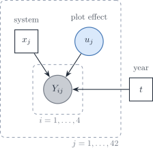
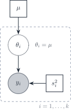
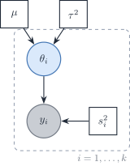

Hackathon: replay an ODE analysis of inflammatory circuits in inflammatory bowel disease.
FairCarboN, and why the carbon budget needs it
The Paris Agreement asks to hold warming well below \(2^\circ\mathrm{C}\), and to reach climate neutrality in the second half of this century. Continental ecosystems have to cut emissions and absorb those that remain:
forests, grassland, cropland, fresh water, peatland, coasts, and cities
That has to happen without giving up the other services those ecosystems provide.
FairCarboN is the French programme for that science. CNRS and INRAE co-lead it, with €40 million over 2023–2029. The next slide is that page.
Four panels of a standard normal. Top left, the density. Top right, the same density with the left tail shaded up to the 0.05 quantile. Bottom left, the cumulative distribution, with the 0.05 quantile marked. Bottom right, a histogram of 400 draws with the density overlaid.
\(Y\) is random: a new core gives a new value. The density \(f\) says which values are likely. R names its four tools d, q, p, and r.
A right-skewed histogram of 300 gamma draws with the density curve, a dashed line at the mean 4 and another at the median 3.4.
\(i\) numbers the rows, from 1 to \(n\). The average \(\bar Y\) is computed from the sample; the expectation \(\mu\) belongs to the distribution. On a skewed \(Y\), the mean sits to the right of the median.
Two spreads, not one
Empirical
\[
s = \sqrt{\frac{1}{n-1}\sum_{i=1}^{n}(Y_i - \bar Y)^2}
\]
\(s\) is the spread of the observations around \(\bar Y\). The empirical standard error of the mean replaces the unknown scale with that \(s\):
\[
\frac{s}{\sqrt{n}}
\]
Theoretical
The target here is \(\mu\). The sampling variance is \(\sigma^2/n\), so
Two sampling distributions of estimates of a mean of 5. The blue one is centred on 5 and wide. The orange one is narrow and centred near 4.
A hat marks an estimate: \(\hat\mu\) is computed from the rows, \(\mu\) is the target. A small variance means repeat samples agree. It does not mean they agree with the truth: that is bias.
Illustrative adult heights. Grey bars pool both sexes and show two modes. A blue curve is the Gaussian for sex F and an orange curve is the Gaussian for sex H, each at half weight, with dashed lines at the two conditional means.
Model
\(\mu = \mathbb{E}(Y \mid x)\)
Read \(\mid\) as “given”. Sex is \(x\), height is \(Y\). Pooled, the histogram has two modes. Given sex, each curve is a Gaussian, and the conditional mean \(\mu\) is its centre. Illustrative draw, seed 20261005: 163 cm for F, 177 cm for H.
Scatter of simulated points around a rising orange line, with three blue bell curves drawn sideways at x equal to 2, 5, and 8.
\(\beta_0\) is the intercept; \(\beta_1\) is the change in \(\mu\) per unit of \(x\). We call \(\eta = \beta_0 + \beta_1 x\) the linear predictor. The model describes a whole distribution of \(Y\) at each \(x\), not only a line.
Two panels. A logit curve stays between 0 and 1 while a straight dashed line crosses both bounds. A log-link curve stays above 0 while a straight dashed line goes negative.
A count mean cannot be negative; a probability stays between 0 and 1. The link \(g\) lets \(\eta\) be a straight line while \(\mu\) stays possible. When \(Y\) is 0 or 1, \(\mu = \pi = \Pr(Y = 1 \mid x)\).
Notation, all together
Symbol
Meaning
\(Y\)
Response on one row
\(x\), \(\mathbf{x}\)
A covariate, or the row of covariates
\(\mu = \mathbb{E}(Y \mid \mathbf{x})\)
Conditional mean, the usual target
\(\pi\)
\(\mu\) when \(Y\) is 0 or 1
\(\eta = \beta_0 + \beta_1 x\)
Linear predictor
\(g(\mu) = \eta\)
Link
\(\hat\mu\), \(\hat\beta\)
Estimates from the rows
\(i\)
Row index (a core, a date, a collar)
\(j\)
Group index: the unit that received the treatment (a site, an enclosure, a batch)
What is an estimand? 🃏
Press f to turn the card.
In one sentence: what is an estimand?
The quantity the analysis is trying to learn: \(\mu\), the unit it belongs to, and the contrast.
Two log-likelihood curves for a Poisson mean. The curve for n equal to 100 is much narrower than the curve for n equal to 10. Both peak near 4.
\(\theta\) is any unknown number in the model, such as \(\mu\). The likelihood scores each value of \(\theta\) by how probable it makes the observed rows. More rows give a sharper peak, so a narrower interval.
Large samples make the average Gaussian
\[
\bar Y \approx \mathcal{N}\!\left(\mu, \frac{\sigma^2}{n}\right) \quad \text{for large } n
\]
Three histograms of 3,000 sample means of skewed exponential draws, for n equal to 1, 5, and 30, with the Gaussian approximation overlaid.
Even when \(Y\) is skewed, the central limit theorem makes \(\bar Y\) close to Gaussian as \(n\) grows. A large \(n\) shrinks the spread. It does not remove a bias or a wrong model: that is the large-sample fallacy.
Four scatter plots with Pearson correlations of about minus 0.75, 0, 0.54, and 0.93, each with a fitted line and the matching angle.
The Pearson correlation \(r\) is the cosine of the angle \(\theta\) between centred \(x\) and \(Y\): 0° gives \(r = 1\), 90° gives \(r = 0\). It measures a straight-line association only.
120 ha of arable land at the Domaine d’Épiosses, near Dijon
Four pesticide-free cropping systems, sampled 2018–2021
42 plots, four subplots each; 640 samples, 595 after quality control
10,633 OTUs from 16S rRNA amplicon sequencing
Data and the analysis vignettes are public (Klockenbring et al. 2026a). The next slide is that record.
Four systems, two contrasts
System
Tillage
Nitrogen input
SD1
Permanent no-till
—
SD2
Non-permanent no-till
—
TS1
Tilled
Exogenous nitrogen
TS2
Tilled
None
The systems sit in three zones: a no-till zone, a tilled zone, and a mixed zone where both occur. That spatial arrangement is deliberate, and it is the reason the tillage contrast is not a clean comparison. The consequence is on the practice contrast and where it sits.
The last term is an offset: a column with a coefficient fixed at 1. The model is then about a rate per read, not a raw count. The fitted version is one mean, two variance assumptions.
Log-log scatter of per-OTU variance against per-OTU mean, with the line variance equals mean.
9,924 of 10,603 OTUs have a variance above their mean. A Poisson fixes those two quantities to be equal, which is the assumption the negative binomial relaxes.
Four analyses, only one of them today
Approach
What it targets
Compare proportions between systems
A share, with a false independence story
Poisson or negative binomial, with an offset
\(\mathbb{E}(Y \mid x)\) for a count, per read
Log-ratio (CLR and its relatives)
A composition, after the zeros are handled
Absolute against relative
Whether the taxon changed, or only its share
Today we fit the count models and the logit. Compositions return on the what-next slides.
The hierarchy in the sampling

The cropping system is a property of the plot. Four subplots in one plot are not four independent trials of that system. 2018 was sampled before the treatments were applied, so it is a baseline rather than a treated year.
SPRUCE 🌲
A whole-ecosystem warming experiment on the S1 bog, Marcell Experimental Forest, Minnesota.
Question on the design page: how do plants, microbes, and ecosystem processes respond to warming, and how does elevated \(\mathrm{CO}_2\) change that response?
Air and deep peat warmed from ambient to \(+9^\circ\mathrm{C}\)
Elevated \(\mathrm{CO}_2\) atmospheres of about 800–900 ppm
Ambient and elevated \(\mathrm{CO}_2\), each at \(+0\), \(+2.25\), \(+4.5\), \(+6.75\), and \(+9^\circ\mathrm{C}\).
spruce-grid.R
spruce |>distinct(plot, warming_c, co2, chambered) |>arrange(plot)#> plots 4, 10, 11, 16, 19 are the elevated-CO2 enclosures#> plots 7 and 21 are unchambered ambient plots, with no assigned warming
Bacterial, archaeal, and fungal copies, each with a log column
Missing numeric values are coded \(-9999\) in the published file
A qPCR copy number is an estimated abundance, not a counted integer. It is a positive, strongly skewed continuous response, so it belongs with the transformation discussion and not with the Poisson.
The sentinel is a documented rule
sentinels.R
# "Missing numeric data are indicated by -9999" (dataset documentation)numeric_cols <-c("Bacteria_copy_dry", "Archaea_copy_dry", "Fungal_copy_dry")for (nm in numeric_cols) { spruce_raw[[nm]][spruce_raw[[nm]] ==-9999] <-NA_real_}
Fifteen values across the nine numeric columns are sentinels. One of the 216 bacterial measurements is missing.
Explanation, for one coefficient, under the linear model:
\[\hat{\boldsymbol{\beta}} = (\mathbf{X}^{\top}\mathbf{X})^{-1}\mathbf{X}^{\top}\mathbf{Y}, \qquad t = \hat\beta_j / \mathrm{SE}(\hat\beta_j)\]
A small RMSE does not say that \(\hat\beta_j\) is the effect of changing \(x_j\).
1 · The simulation that makes the contrast
Truth uses only \(X_1\) and \(X_2\). Three further covariates are noise. \(n = 200\). Seeds 123 for the draw and 42 for the split. The excerpt is MetricGate’s script. It is not refit here.
Random forest
The flexible predictor. Held-out RMSE 2.40.
forest.R
rf_fit <-randomForest(Y ~ ., data = train)
The trees chased the noise covariates. A more flexible fit predicted worse.
Linear model
The explanatory fit. Held-out RMSE 1.01.
linear.R
Y <-3* X1 -2* X2 +rnorm(n)lm_fit <-lm(Y ~ ., data = train)
The coefficients are the explanatory object, and here they also predicted better.
2 · Report the effect, not only \(p\)
2 · An effect, an interval, and a reason it matters
Two-by-two table of a hypothesis test: Type I error when a true null is rejected, Type II error when a false null is not rejected.
A Type I error rejects the null when it is true; its long-run rate, when the test is calibrated, is \(\alpha\). A Type II error fails to reject the null when it is false; its rate is \(\beta\), and the power is \(1 - \beta\) (Biswas).
2 · A smoke alarm
The null is: there is no fire.
Type I: the alarm rings, and the building is empty. You evacuate for nothing.
Type II: the building is burning, and the alarm stays quiet.
Power is the alarm ringing when there is a fire. \(\alpha\) is how often a quiet building still sets it off. A soil-carbon test has the same two cells, and a different cost for each one.
2 · \(p\) is not that rate
If the treatment has no effect, a \(p\) of 0.03 means that 3% of replicate studies would obtain an effect this large or larger.
Comparing that number with \(\alpha\) is the yes-or-no decision
The number itself is a probability about the data, not about the hypothesis
\(\alpha\) is fixed before the data; \(p\) is computed from them
Under identical replicates of this experiment, with the effect set to zero, \(p\) is the probability of a result more extreme than the one in hand (Harrell, ch. 22). 📄 Thiese, Ronna, and Ott collect the same reading in P value interpretations and considerations.
A \(p\) of 0.06 says that, under the model and the null, a replicate would be more extreme about 6 times in 100. It does not say that the null has probability 0.06.
\(\alpha\) is the long-run probability of asserting an effect when the effect is exactly zero. It is not the probability that a positive result is false, and it is not “the probability of an error”.
A procedure that assumes the null cannot report the probability that the null is true. Fisher’s 1956 wording treated a 1% test as a 1% rate of mistaken decisions, which swaps \(P(\text{assert} \mid H_0)\) with \(P(H_0 \mid \text{assert})\) (Harrell).
2 · One P, or a screen of them
Halsey and colleagues simulated a small normal experiment and showed a single \(P\) jumping across 0.05 from sample to sample. They called that fickleness a source of irreproducible decisions (Halsey et al. 2015).
van Helden repeated the simulation. The interval crossed the null in the same runs where \(P > 0.05\), so swapping the interval for \(P\) did not change the decision. He put the instability on the small sample, not on an intrinsic property of \(P\)(van Helden 2016).
Halsey, Curran-Everett, and Drummond replied that the shared mathematics was not the recommendation. The recommendation was to read the effect and its margin of error, rather than to re-apply a threshold (Halsey et al. 2016).
2 · A planned question is not a screen
Huber called the exchange a clash of cultures (Huber 2016).
A craftsman reports one \(P\) for one question written in advance.
An industrialist uses \(P\) to screen thousands of hypotheses; the histogram of all of them is part of the evidence.
One \(P\) can fall anywhere in \((0,1)\) when the null is true; the distribution of many \(P\) values is a different object.
The first three confuse a probability about the data with a probability about the hypothesis (the definition). The last two are the effect and the interval.
2 · Five situations, none of them \(p\)
Due to chance. A rise in soil carbon with \(p = 0.04\) is not “a 96% chance it was not luck”. The 4% is how often a flat field would look this steep.
A repeat will match. That \(p\) does not give the next enclosure a 96% chance of the same call. A repeat is a new experiment.
The null is false.\(p = 0.01\) is not a 99% chance that the treatment works.
The result matters. A drug can clear \(p < 0.05\) and still fall short of a change a patient would feel. Statistical significance is not therapeutic value.
It generalises. A small \(p\) on one bog, in one year, does not carry the result to the next site.
Ten thousand simulated mean differences. Significant results lie far above the true difference of 1, or below zero with the sign reversed.
Gelman and Carlin: Type M is how many times too large a significant estimate is. Type S is how often that significant estimate has the wrong sign.
2 · Those significant runs were about eleven times too big
Olszewski drew the previous figure from two normal samples, \(n = 10\) each, standard deviation 10, true difference 1, seed 1000, 10,000 \(t\) tests.
Power is about 5.5%. The significant estimates average about 11 times the true difference, and about a quarter to a third of them point the wrong way. A small \(p\) from a small study is a reason to doubt the size, which is why the effect stays in the sentence.
Type M inflation factor against power, falling from several-fold at low power toward 1 as power approaches 1.
On his curve the inflation is several-fold below about 10% power, and close to 1 once power passes about 80%. The same contrast is Lukas Vermeer’s simulator.
3 · Handle missing data on purpose
3 · Missing data ❓
❓
Write both answers before the next slide.
What are the three mechanisms that put missingness into the distribution of \((Y, \mathbf{x})\)?
What would you do about each, and which of those repairs do you think are the wrong ones?
Three directed graphs for whether a dog eats homework, labelled missing completely at random, missing at random, and missing not at random.
\(R\), the missingness indicator, has to be in the story. If \(R\) depends on the unobserved value of \(Y\), a model that only conditions on the observed covariates does not fix the bias.
3 · Missing data are part of the design
Avoid
Prefer
Zero or mean fill
Report extent of missingness in \(Y\) and in \(x\)
Indiscriminate complete-case deletion
Name the mechanism you assume; multiple imputation when MAR is defensible
Report how much is missing, in \(Y\) and in \(x\), and what you did. Zero-fill, a mean fill, and dropping every incomplete row are assumptions, not defaults (Riley et al. 2022). Definitions: three mechanisms.
“Dry” versus “wet”, or soil temperature split at \(10^\circ\mathrm{C}\).
\(9.9^\circ\mathrm{C}\) and \(10.1^\circ\mathrm{C}\) become different regimes
\(10.1^\circ\mathrm{C}\) and \(25^\circ\mathrm{C}\) become the same regime
a second cut, chosen because it was “significant”, will not travel
Keep warming, moisture, and pH continuous unless the threshold is itself the scientific object. SPRUCE kept the warming gradient rather than binning it.
Illustrative points along a hump-shaped mean, with a straight-line fit and the curve used to simulate the response.
6 · Quantify a subgroup difference
6 · A subgroup claim needs its own contrast
Common misread
What to estimate
Significant in one subgroup, not in another
Not proof the effects differ
Overlapping interval bars
Not a test of interaction
\[Y = \beta_0 + \beta_1 T + \beta_2 S + \beta_3 (T \times S) + \epsilon, \quad \text{report } \hat\beta_3 \text{ with its interval}\]
“Significant in fens, not in bogs” is not an interaction. Estimate the difference of effects, with an interval (Riley et al. 2022). Overlapping interval bars are not a test.
7 · Read heterogeneity carefully
7 · Two spreads in every pooled table
Each site, or study, reports one estimate. Its scatter around the pooled mean has two sources:
the true effects differ between sites: their spread is \(\tau^2\)
each estimate is noisy: its sampling variance is \(s^2\), and it shrinks as the site collects more cores
\(I^2\) mixes the two. \(\tau^2\) does not.
7 · \(\tau^2\) is how far the true effects spread
\(\tau^2\) is an absolute spread, on the squared scale of the effect. It is not a percentage.
Arithmetic, not a carbon dataset: \(\tau^2 = 0.09\) on a log risk ratio gives \(\tau = 0.30\). A rough band for the site effects is the mean \(\pm 1.96\tau \approx \pm 0.59\). Call that large or small only after you name the scale.
Sketch of three soil cores at 40, 55, and 70 grams per kilogram. Wide red error bars give a small I-squared. Narrow green error bars give a large I-squared. The true stocks do not change.
The drawing is the arithmetic on the previous slide. Sharper cores raise \(I^2\) because the sampling bars shrink.
7 · Report \(\tau^2\), and say what \(I^2\) is relative to
Quantity
Question
\(\tau^2\)
How far do the true site effects spread?
\(I^2\)
How large is that spread beside the sampling noise?
Do not use 25%, 50%, and 75% as cut-offs. The same \(\tau^2\) gave both 20% and 94%.
7 · Perspective: fixed effect or random effects
Fixed effect. One true effect. Sites differ only by noise, so \(\tau^2 = 0\).

Random effects. Each site has its own true effect, drawn around \(\mu\) with spread \(\tau^2\).

The random-effects model is how \(\tau^2\) enters a pooled analysis. A site-level covariate can then explain part of \(\tau^2\). The same two-level structure returns in the design block: fixed and random name the target.
8 · Check a prediction in three ways
8 · A prediction needs three checks
Check
Question
Sketch on next slides
Discrimination
Do high \(\hat\pi\) rank above low?
AUC
Calibration
In bins, does \(\bar Y \approx \hat\pi\)?
Calibration plot
Utility
Does the score beat treat-all / treat-none at some \(t\)?
Net benefit
Discrimination, calibration, and usefulness at a decision threshold are different questions (Riley et al. 2022). A large AUC with a miscalibrated probability still misleads the decision.
We will not fit a prediction model today. The three sketches that follow are drawings, not fitted scores. They belong to the prediction purpose, not to an explanation of \(\beta\).
\(t\) need not be clinical. It is the chance of a peat source, or of a stock change, at which a wasted visit costs as much as a missed one. A useful score beats both “act on every site” and “act on none” on a band of \(t\).
Ignoring the cluster pretends that rows in the same enclosure are as different as rows in different enclosures (Riley et al. 2022). The model is a random intercept. 📝 Godechot’s panel notes use the same nesting for repeated observations of one unit (the slides).
9 · Count the unit before you count the rows
Teaching arithmetic, not a published study:
4 sites, the level that received the treatment
3 plots in each site
20 cores in each plot
3 technical readings on each core
\(4 \times 3 \times 20 \times 3 = 720\) rows. If the treatment was applied to the site, you do not have 720 independent replicates.
For an explanatory model, screening on \(p\)-values is the wrong gate. Draw the paths first (Riley et al. 2022). Lasso and ridge answer a prediction problem; they are not a causal adjustment set.
Ridge penalises the squares of the coefficients (\(L_2\)).
Lasso penalises the absolute values (\(L_1\)).
Elastic net mixes the two.
11 · Sensitivity is part of the result
11 · Show that the conclusion can move
flowchart TD
main["Main analysis: estimate and interval"]
main --> miss["Missing-data assumption"]
main --> time["Time-to-event shape"]
main --> model["Model / link / distribution"]
main --> prior["Prior or penalty choice"]
miss --> stab["Does the conclusion move?"]
time --> stab
model --> stab
prior --> stab
A constant hazard ratio, a “vague” prior, or a complete-case fit can each carry the result. Refit under a second defensible assumption and say what moved (Riley et al. 2022). For an observational claim, sensitivity is the report.
Of these twelve, the next hour stays with a problem the poster assumes you have already solved: the distribution of \(Y\).
Soil counts, fluxes, and compositions are often skewed, bounded, discrete, or full of zeros. A Gaussian linear model is then the wrong likelihood, even when the question, the estimand, and the design are clear. Next: the shape of \(Y\).
When Y is not Gaussian
🔬 About thirty minutes. QQ plots, six reasons not to transform \(Y\), then four guidelines.
The pipeline rewrites the column first
A machine-learning pipeline from data collection through feature transformation, selection, dimension reduction, and modelling, with model evaluation and tuning circled.
Numerous environmental phenomena do not follow the bell-shaped structure of the Gaussian
Environmental \(Y\) is often:
skewed, and strictly positive
a count, or a composition
full of zeros, or censored at a detection limit
dependent in time or in space
A Gaussian lm can still be a useful approximation for a mean. It is a poor default when the support of \(Y\) makes the approximation impossible. This hour follows where we go deeper.
Quetilismus
🔗 Adrian Olszewski names the habit after Edgeworth’s word for Quetelet. A unimodal curve is treated as a normal curve. Skew is then a defect to repair: drop the tails, wait for a larger sample, or transform until the histogram looks symmetric.
Identify conditional non-Gaussian distributions
How to read a QQ-plot 🔍
Points along the line support the reference shape. A curve, or a tail that leaves the line, is a departure. Illustrative residuals, seed 20261005.
Two QQ plots. Left: residuals from a Gaussian response sit near the reference line. Right: residuals from a Gaussian linear model fitted to Poisson counts bend up in the right tail.
Four shapes on the QQ plot
What is wrong?
Nothing. Points on the line, inside the band.
What is wrong?
Heavy tails: an S-curve, both ends flare away.
What is wrong?
Right skew: a concave-up bend. Left skew bends down.
What is wrong?
Light tails: a flat S, both ends pulled in.
A normality test is a poor gate
with a large \(n\), the test rejects a departure too small to change \(\hat{\mu}\)
with a small \(n\), it misses a departure large enough to matter
the \(p\)-value does not say whether the estimand is distorted
the test is aimed at the wrong object if you apply it to raw \(Y\) rather than to the model you will trust
Prefer the QQ plot, and then a likelihood that matches \(Y\). A formal test is a poor substitute for that plot.
Two sample sizes, two failures
Adrian Olszewski’s rule, which this hour follows: stop using them, except when a reviewer demands the number. He counts more than 90 procedures.
A small sample leaves them underpowered, so a real departure often passes.
Past about 150–200 observations they reject almost any departure, including one too small to matter, while the central limit theorem for a mean is improving.
Families aimed at skew, at kurtosis, and at the whole distribution contradict one another. Shapiro–Wilk is one of those families, not a universal test.
The same sample, opposite answers
A normal QQ plot with a step, two histograms of the same sample, and a table of normality-test p-values that disagree.
\(n = 400\), skewness about 0, kurtosis about 3. Shapiro–Wilk gives \(p = 0.123\). Lilliefors, Cramér–von Mises, and Anderson–Darling reject. The QQ plot shows the step either way.
Six reasons not to transform \(Y\)
Before you transform \(Y\)
Write two answers, and keep them.
Why is transforming the response usually a bad default?
What do you do instead when a Gaussian model for \(Y\) does not fit?
Olszewski’s answers, from the 2022 note, are the six caveats that follow. A multiplicative process is the case he keeps. A skewed histogram is not. 📄 The note.
Caveat 1 · A transform changes the hypothesis
A logarithm changes a difference of arithmetic means into a ratio of geometric means. A Box–Cox power such as \(-0.67\) is not a unit anyone measured.
On \(\log Y\) against \(x\), a small coefficient is nearly a percentage: \(\exp(0.05) \approx 1.05\). A coefficient of \(0.5\) is not a 50% change, because \(\exp(0.5) \approx 1.65\). The inequality that separates the two means is written later.
The two sides meet when \(f\) is linear. A confidence interval, a moment, or a test computed on \(f(Y)\) is not the same object on the original scale after \(f^{-1}\). The log case is the estimand slide. Equation 1 is why. 🔗 eulerism_, carousel PDF (Jensen, slides 8–14).
Caveat 2 · Convex pulls the mean up
Left, a convex curve with the chord above it and an arrow for the Jensen gap. Right, a concave curve with the gap running the other way.
Convex, such as \(y^2\).
The green point is \(f(\mathbb{E}[Y])\). The red point is \(\mathbb{E}[f(Y)]\). The arrow is the gap in Equation 1.
Concave, such as \(\log y\).
The inequality reverses. Back-transforming a mean on the log scale lands off \(\mathbb{E}(Y)\).
Caveat 2 · \(\log Y\) changes the estimand
A Gaussian model for \(\log Y\) targets \(\mathbb{E}(\log Y \mid x)\).
\[
\exp\{\mathbb{E}(\log Y \mid x)\} \le \mathbb{E}(Y \mid x),
\]
with equality only in degenerate cases. The left-hand side behaves like a geometric mean. The right-hand side is the arithmetic mean on the original scale.
\(\log(Y+1)\) is a third response. Zeros were the reason for the \(+1\), and they are still in the model, only hidden.
In a Gaussian model the mean and the variance are separate parameters. After a log they are tied: a log-normal variance depends on the mean. A power chosen only to stabilise the spread changes that relationship even when the power is not a logarithm.
Caveat 4 · Skew is the process: a product is not a sum
The classical central limit theorem is a statement about a sum, and it needs a finite variance. A product of positive steps is a different limit. Cascades, growth, and decay land on a log-normal, which is skewed. Cauchy, Lévy, and Pareto sit outside that classical sum.
A marginal histogram can look skewed because several Gaussian groups, with different means, were pooled.
Each conditional \(Y \mid x\) can already be Gaussian
Transforming the pooled column rewrites those conditionals
Caveat 5 · A logarithm needs a positive response
\(\log Y\) is undefined when \(Y\) can be negative. Adding a constant, as in \(\log(Y + c)\), defines a different response. A bone-density T-score is one measurement that is allowed to be negative. Quantile regression does not need the sign. Yeo–Johnson is the power that allows negatives, and the later slide says what that power costs.
Caveat 5 · A constant sum is a simplex
If the parts add to a constant, the point is not free in the plane. The picture: \(x + y = 1\) is a line segment, not a square. A sequencing library is the same constraint. The counts in one sample add to the library size, so a gene is a share of that sum. A Gaussian interval on the count, or on a shifted logarithm of the count, does not respect it.
Caveat 5 · Mean ± 2σ can leave the scale
Recovery rates piled against 100 percent, with a 1-sigma interval of 92 plus or minus 12 and a 2-sigma interval of 92 plus or minus 24, beside a normal bell marked 68, 95, and 99.7 percent.
Hartmann and Rudolph. The 2-sigma interval is 92 ± 24%, so it leaves 0–100. The bell beside it is the 68%, 95%, 99.7% picture. A normality test does not turn that interval into a recovery rate. The same objection applies to a concentration, a count, or a composition.
Caveat 6 · A power that chases a bell shape names no unit
Yeo–Johnson chooses a power, including for zeros and negative values, so that the transformed sample is closer to Gaussian. When the next method is Euclidean, such as a PCA, the transform that follows \(v(\mu)\) is the variance-stabilising transformation.
the criterion is closeness to a bell shape, not a scientific unit
the inverse transform is awkward, so a mean on the transformed scale is hard to say in the original unit
if you use it, describe the original \(Y\) with the median and the quartiles
It does not replace a likelihood whose support is the support of \(Y\).
The exception · a transform that matches the science
A transform is justified when it matches the science:
a multiplicative effect, so that logs are the natural contrast
a variance that grows with the mean, and a log that stabilises it
a physical rate that is already defined on a log scale
It is not justified by “the histogram looked skewed” alone: that shortcut is what caveats 1 to 6 cost.
Match the transform to \(v(\mu)\)
Huber, chapter 13, writes \(v(\mu)\) for the way the variance trends with the mean. Three prototypes cover most assays:
constant: \(v(\mu) = c\)
Poisson-like: \(v(\mu) = a\mu\)
quadratic: the standard deviation proportional to the mean, so \(v(\mu) = b\mu^2\)
A real measurement can add them. For microarray fluorescence he cites Rocke and Durbin (2001): background plus a multiplicative noise, \(v(\mu) = b\mu^2 + c\). A variance-stabilising transformation is built from that curve, so replicate spread no longer tracks the mean. One power for the whole sample, as on the Yeo–Johnson slide, does not use \(v(\mu)\).
A VST is for a Euclidean next step
Reasons for analysing the transformed scale:
a plot, or a heatmap, that spends its ink across the range
PCA, or a clustering that uses correlation, no longer dominated by a few very large means
a method that assumes identical, homoskedastic noise
That is the machine-learning case: a method whose geometry is Euclidean and wants a roughly constant spread. The transformation is still a new response. Inference for \(\mu\) on the original support stays with the link.
Guideline 1 · Summarise beyond the arithmetic mean
Three means, three questions
Table of the arithmetic, geometric, and harmonic means, with formulas and the inequality A at least G at least H.
Sharmi Murali: a sum, a product, or a reciprocal. \(A \ge G \ge H\) for positive numbers, with equality only when every value is the same. A product process wants \(G\), and logging \(Y\)changes the estimand to that mean.
The centre has to match the scale
Scale
Measure
Example
Similarity
Centre
Spread
Binomial
Success or failure
Rainy days
Equality only
\(np\)
\(np(1-p)\)
Nominal
Category membership
Soil types
Equality
\(\text{mode, }\bar{x}_{\mathrm{geo}},\, np_i\)
Entropy
Ordinal
\(\text{ordered by } <\)
Hurricane category
Rank order
\(Q_{50}\)
\(Q_{75}-Q_{25}\)
Interval
\(d=|x_1-x_2|\)
Time, location
Additive, near 0
Arithmetic mean
Arithmetic sd
Rational
\(x_1/x_2\)
Length, weight, isotope ratio
Multiplicative, near 1
Geometric mean
Geometric sd
Logistic
\((x-l)/(u-x)\)
Elevation, depth
Log-ratio
Logistic mean
Logistic variance
Concentration
Part of a constant sum
TOC, recovery rate
Aitchison distance
Geometric mean
Compositional variance
Hartmann and Rudolph. An arithmetic mean is the interval row. A ratio wants a geometric mean. TOC and a recovery are parts of a sum, not interval measurements.
Guideline 2 · Show the distribution, not only a box
A box plot hides the shape
A box plot reports a median, a box, and whiskers. It does not show a second mode, a pile of ties, or how many points sit in the tail. The case against using it alone is that those are often the features a carbon response actually has.
Prefer a plot that keeps the raw points. A raincloud adds a density and a short summary beside them (Scherer, 6 June 2021).
Show the difference, not a star
Five panels from Ho and colleagues: a bar chart, a box plot, a scatter with means, a null distribution of the difference, and a Gardner–Altman plot of the mean difference with an interval.
Four cards: tests of whole distributions, stochastic superiority, specific features such as quantiles, and parametric parameters.
Olszewski groups comparisons of two or more samples by the question, from the most general to the most specific. About nine hundred named procedures sit in these groups.
3.i · Are the two distributions identical?
Olszewski’s first card: tests of entire empirical distributions, with null hypothesis F1 equals F2, two empirical CDFs, and Anderson–Darling, Cramér–von Mises, and Kolmogorov–Smirnov as examples.
3.i · Whole distributions, then the tails
A test of the empirical distribution functions asks only whether \(F = G\). It does not say whether the difference is a shift, a scale, or a shape.
Olszewski’s family: Kolmogorov–Smirnov uses the largest vertical gap, and it is the least sensitive of the three. Cramér–von Mises integrates the squared gap, so a small gap that persists can count. Anderson–Darling uses the same integral with extra weight in the tails. For a heavy-tailed flux, Anderson–Darling is the one that looks where the mass of the question sits.
3.ii · Is one sample generally larger?
Olszewski’s second card: stochastic superiority, with null hypothesis P(B greater than A) plus half P(B equals A) equals one half, and Mann–Whitney, Brunner–Munzel, and Kruskal–Wallis among the examples.
3.ii · A rank test is not a mean test
Two examples. Left: equal medians, Mann–Whitney p below 0.001, and about 70 percent stochastic superiority. Right: medians differ by 10, Mann–Whitney p above 0.999, and stochastic superiority of 50 percent.
Mann–Whitney estimates \(P(B>A)+\tfrac12 P(B=A)\). Equal medians can be decisive. A gap of 10 can be invisible. For a median, use quantile regression.
3.ii · Ranks answer a different question
Unless the two distributions differ only by a shift, a rank test mixes location, scale, and shape. Mann–Whitney can be small when the means are equal and the variances are not, and large when the means differ and the variances differ the other way. That is Studentization: the null of a rank test is not the null of a mean.
If the planned question is a mean, stay with a procedure for a mean: a permutation Welch test, Freedman–Lane, or a wild bootstrap. Brunner–Munzel is the rank procedure that allows unequal variances, and it still estimates a probability, not \(\mu\). The map of those choices is the six columns.
3.iii · Do a location or a quantile differ?
Olszewski’s third card: specific characteristics of the distribution, such as quantiles, the Hodges–Lehmann pseudomedian, scales, and shapes, with quantile regression and Mood’s tests among the examples.
3.iii · Generalised locations and quantiles, briefly
Six columns of nonparametric comparisons: whole distributions, stochastic superiority, generalised locations, quantiles, robust mean-like estimators, and arithmetic means.
A generalised location, such as the Hodges–Lehmann shift, is rank-based. It is a shift only if both groups share dispersion and shape.
A quantile, such as the median, is compared directly by quantile regression.
3.iv · Does a model parameter differ?
Olszewski’s fourth card: explicit parametric model parameters, such as mu 1 equals mu 2, with the t-test, the Welch t-test, the permutation Welch test, and GLM-based tests among the examples.
3.iv · Keep the mean, and change the standard error
Table of ways to compare two means when variances differ, when there are outliers, or when the distribution is not Gaussian.
Olszewski keeps the mean when that is the question. Welch does not need a pretest of the variances. Yuen changes the target to a trimmed mean. A permutation Welch test keeps the mean when the distribution is not Gaussian.
3.iv · A permutation \(p\) for the same Welch statistic
Olszewski: MKinfer::perm.t.test uses the Welch–Satterthwaite statistic unless you set var.equal = TRUE. Leave the default. Do not pretest the variances with an \(F\) test.
perm-test.R
result <- MKinfer::perm.t.test( response ~ group,data = data,permStat =TRUE)MKinfer::h0plot(result)
3.iv · A robust estimator limits the pull of one point
\[
\rho_c(u) =
\begin{cases}
u^2/2, & |u| \le c \\
c\,|u| - c^2/2, & |u| > c
\end{cases}
\]
Huber regression is least squares for small residuals and absolute error for large ones: MASS::rlm(y ~ group, psi = MASS::psi.huber, k = 1.345). With \(c = 1.345\) it keeps 95% of the efficiency of least squares when the errors are Gaussian. The target is the centre of a symmetric error. Under skew it is neither the mean nor the median: say which you report.
Guideline 4 · Change the model, not the data
A test is a model with one factor
Lindeløv writes the common tests as linear models. A Pearson correlation is the slope in lm(scale(y) ~ scale(x)): standardising both variables makes that slope equal to \(r\). A \(\chi^2\) test of counts is a Poisson log-linear model, glm(counts ~ group, family = poisson), compared with an intercept-only model.
The model is the more flexible object. It keeps the same contrast and adds a covariate, a variance weight, or a link. A named test usually cannot.
A paired \(t\) reports the mean
Loïc, seed 1234, 100 people measured twice. The Wilcoxon signed-rank test gives \(V = 1711\) and \(p = 0.005\). The paired \(t\) test gives a mean difference of \(-0.42\), an interval from \(-0.69\) to \(-0.14\), and \(p = 0.003\). The sign is the order of the two levels.
Both reject. Only the paired \(t\) test says how large the mean change is. The signed-rank test is a statement about the ranks of the within-person differences.
The pair is a random intercept
An ordinary lm on the same rows, without the person, keeps the estimate at \(0.42\) and inflates the standard error to \(0.28\), so \(p = 0.14\). A random intercept, (1 | ind), keeps \(0.42\) and brings the standard error back to \(0.14\). The \(t\) statistic returns to \(2.99\), the paired test.
In that fit the person-level variance is \(3.06\) and the residual variance is \(0.96\). Dropping the pair does not change the estimate. It charges the within-person contrast with the between-person noise.
A logit link stays inside the bounds
For a recovery, or any proportion, model \(\operatorname{logit}(\pi)\) with \(\pi = \mathbb{E}(Y \mid x)\). When \(Y\) is binary this is logistic regression. The same link is the model for a proportion. The reported interval is the inverse logit of the interval for the linear predictor. It stays in \((0, 1)\), and the test is a test of \(\pi\).
It is not the arithmetic mean of a column that was transformed until a QQ plot looked straight.
When ordinary least squares is the wrong skeleton
If the Gaussian, independent, constant-variance assumptions fail, the replacements are still models.
Generalised least squares: a known pattern for the variance, which is the Welch test when the pattern is a group.
Generalised estimating equations: a working correlation and a sandwich standard error.
A generalised linear model: a distribution for \(Y\) and a link for \(\mu\).
A generalised additive model: a smooth function of \(x\) in place of a straight line.
This hour then stays with the generalised linear model. The others are named so a later choice is a choice of estimand, not a new religion.
From tests to models
The caveats and the guidelines are done. The next block describes the models themselves.
Linear and generalised linear models
📈 About forty minutes. Least squares, ANOVA and ANCOVA, the Poisson and logistic families, then a smooth mean.
Ordinary least squares, a reminder
The formula is the model
In R the same line is response ~ predictors. Read ~ as “described by”.
+ adds a term. - or -1 drops one, including the intercept.
: is an interaction. * is the interaction and the main effects. ^n adds interactions up to degree \(n\).
I() is arithmetic. age^2 in a formula is not \(age^2\). The square is I(age^2).
y ~ 1 is the null model: the mean, and no covariate. One mixed formula example is Income ~ age^2 + I(weight/height^2) + gender.
Stacked, that is \(\mathbf{Y} = \mathbf{X}\boldsymbol{\beta} + \boldsymbol{\varepsilon}\). The first column of \(\mathbf{X}\) is 1 when the model has an intercept. Least squares chooses \(\boldsymbol{\beta}\) to minimise the sum of squared vertical residuals. The fitted values are \(\hat{\mathbf{Y}} = \mathbf{H}\mathbf{Y}\), and \(\mathbf{H}\) is the hat matrix.
Ordinary least squares is BLUE
The Gauss–Markov theorem: if \(\mathbb{E}(\varepsilon_i) = 0\), the \(\varepsilon_i\) are uncorrelated, each has the same finite variance \(\sigma^2\), and \(\mathbf{X}\) has full column rank, then
has the smallest variance among linear unbiased estimators. The errors do not have to be Gaussian for that result. Gauss used normality. Markov removed it.
If, in addition, the \(\varepsilon_i\) are independent and Gaussian, that same \(\hat{\boldsymbol{\beta}}\) is the maximum-likelihood estimator. The \(t\) tests and the \(F\) test on the printout use this extra assumption. If the variances differ or the errors are correlated, the corresponding estimator is generalised least squares, which is the Welch case when the variance is a group.
A coefficient is a \(t\)
summary(lm) tests each coefficient against 0. The statistic is the estimate divided by its standard error. Angelino and Marcone note that this test assumes Gaussian residuals. It is the interesting test for a slope. It is rarely the question for the intercept.
In a model with several covariates, each line is the test of that coefficient with the other terms already in the model. Mahanty (9 January 2018) maps the same printout. Two of his readings do not travel: multiple \(R\) is not a count of points on the line, and a small \(p\) is not a verdict that the model fits.
The \(F\) test compares two nested models
The \(F\) statistic on the same printout compares the fitted model with the intercept-only model. The statistic is the drop in the residual sum of squares, per extra parameter, divided by the remaining residual mean square:
With a single slope, this \(F\) matches the \(t\) test of that slope. With several slopes, every coefficient can be quiet and the \(F\) test can still reject. \(R^2\) is the share of the variance of \(Y\) that the fit captures. Adjusted \(R^2\) charges a cost for each extra term. The residual degrees of freedom are \(n\) minus the number of estimated parameters.
Four plots, then two more
plot() on an lm draws four checks by default: residuals against fitted values, a normal QQ plot, scale against location, and residuals against leverage (plot.lm). Those are which = c(1, 2, 3, 5).
Tay (14 November 2019) notes the two that are not in that panel. which = 4 is Cook’s distance against the row number. which = 6 is Cook’s distance against leverage over one minus leverage. He treats a Cook’s distance above 1 as a point to inspect. The next four slides are the default four, each with a fit that respects the assumption and a fit that does not. Illustrative draws, seed 20261005.
Residuals against the fitted values
Two residual-versus-fitted plots. Left: a flat cloud around zero. Right: a U-shape from fitting a straight line to a quadratic.
A flat cloud is the linear mean. A curve means \(f(x)\) is still in the residual.
The residual QQ plot
Two normal QQ plots of residuals. Left: points along the line. Right: heavy tails from a t distribution.
Same reading as the shape figures. A line supports the Gaussian assumption behind the \(t\) and \(F\) tests. A flare is a heavy tail, and the next slide changes the model for \(Y\).
Scale against location
Two scale-location plots. Left: a flat smooth of the square-root absolute residual. Right: the smooth rises because the variance grows with x.
A flat smooth is constant variance, the Gauss–Markov condition. A rise is a variance that travels with the mean: generalised least squares, or a family in which the variance depends on \(\mu\).
Leverage and Cook’s distance
Two residual-versus-leverage plots. Left: points near the origin, inside the Cook contours. Right: one point far to the right with a large residual.
Leverage \(h_{ii}\) is the diagonal of the hat matrix. A common cut is \(2p/n\) or \(3p/n\) from Belsley, Kuh, and Welsch (1980). The contours are Cook’s distance 0.5 and 1.
ANOVA and ANCOVA
ANOVA is a joint test on a model
It is not a test: it uses an \(F\) or a \(\chi^2\) statistic
It is not a model: it runs on a fitted model
It asks whether the levels of a factor jointly move the mean: all the contrasts of that factor at once, not one pair
anova(lm(y ~ group), lm(y ~ 1)) and summary(aov(lm(y ~ group))) give the same \(F\). 📝 Olszewski, A brief story of ANOVA (2025).
ANCOVA · a factor shifts the intercept
The height example is Height ~ Age + Gender. Gender is a factor, so R codes it as an indicator against a reference level. Women are the baseline in the printout. The line for women is \(124.52 + 2.72\,\mathrm{Age}\). The line for men has the same slope and a higher intercept, \(127.3 + 2.72\,\mathrm{Age}\).
That is an analysis of covariance: one continuous covariate, one categorical factor, and a common slope unless you add Age:Gender. The gender coefficient is a difference of intercepts, not the raw difference of the two mean heights. The sums of squares for that fit still depend on which ANOVA type you ask for.
Type I, II, and III answer different questions
Type I: each term after the terms written before it
Type II: each main effect after the other main effects; an interaction after the mains
Type III: each term after every other term, including interactions
The three answer different questions. Pick one before fitting, and do not use Type I unless the order is the scientific order.
For a generalised linear model the same partition is an analysis of deviance. The statistic is a likelihood-ratio \(\chi^2\), or a score test, rather than an \(F\) on residual sums of squares. anova(glm(...), test = "LRT") is that comparison of nested models. It is still a test of a term in a model, not a new model. His 2025 notes put the conditional mean, the probability, the quantile, and the hazard on one page as the functions that comparison can target.
aov() is Type I
A warning that aov() in R is Type I ANOVA, so the test of treatment depends on whether baseline or treatment is entered first.
Olszewski: aov() is Type I, so the treatment \(F\) in his sketch is 16.6 or 38.7 depending on order. car::Anova(type = 2) does not inherit that order. 📝 His longer ANOVA note asks whether the name is a test or a model.
Which R function gives which type
Function
Type
Models
Watch
aov()
I
Linear model
⚠️ The order of the terms changes the result
anova()
I or III
Most models, including GLMs
Usually a comparison of two models
car::Anova()
II or III
Most models
Type III needs contr.sum
emmeans::joint_tests()
III
GLS, GEE, mixed, quantile, robust
Tests estimated marginal means, not raw means
Choose the type for the question, then the function that gives it.
When an ANOVA assumption fails, generalise the model
Assumption violated
Use instead
Equal variance per group
Generalised least squares with one variance per group, nlme::gls() with varIdent()
Independence
GLS with a correlation, GEE, or a linear mixed model
Gaussian residuals
GEE, or a permutation ANOVA
Outliers
A robust linear model
Each keeps the arithmetic mean as the null. A switch to Kruskal–Wallis does not: it tests stochastic superiority.
Generalised linear models
Favour the model, not a pretest
flowchart LR
question["Question"]
support["Support of $$Y$$"]
family["$$Y \mid x \sim \mathrm{family}(\mu)$$"]
check["Residual plot"]
report["Estimate and interval"]
question --> support --> family --> check --> report
A pretest that switches you from a \(t\)-test to a rank test still does not estimate \(\mu = \mathbb{E}(Y \mid x)\). Rank tests answer a different contrast, and they have assumptions of their own.
Agresti writes a generalised linear model as one object: a distribution for \(Y\), a linear predictor, and a link on the conditional mean (Agresti 2015).
After the fit, \(\mathbb{E}(Y \mid \mathbf{x}) = g^{-1}(\mathbf{x}^{\top}\boldsymbol{\beta})\) is a probability, an expected count, or a positive rate.
Poisson: \(V(\mu) = \mu\). Binomial mean \(\pi\): variance \(\pi(1-\pi)\). The link is part of the family, not a fix applied to the residuals afterwards.
Coefficients read on the link scale
The link is chosen so \(\boldsymbol{\beta}\) answers a substantive question on the mean.
For \(\log(\mu) = \beta_0 + \beta_1 x\),
\[
\frac{\mu(x+1)}{\mu(x)} = e^{\beta_1}.
\]
For a logit on \(\pi\), \(e^{\beta_1}\) is an odds ratio. The goal is not to make a histogram look Gaussian. The goal is a coefficient that names an effect on \(\mu\). The compact contrast is the link stays on the mean.
The response chooses the family
Support of \(Y\)
A first model
Continuous, unrestricted, stable variance
Gaussian linear model
Two categories, truly binary
Logit, \(Y \sim \mathrm{Bernoulli}(\pi)\)
Non-negative integer, variance near the mean
Poisson, log link
Same, with extra-Poisson variance
Negative binomial, log link
The next slides keep \(\mu = \mathbb{E}(Y \mid x)\) and change the family. A transformation of \(Y\) is the other route, already set aside on the estimand slides.
The link stays on the mean
Angelino and Marcone write the earlier models as \(g(Y) = f(x) + \text{error}\). On a 0/1 response that line can return a probability below 0, because a straight line is not confined to \((0, 1)\).
In the generalised linear model the linearity sits on \(g(\mu)\). The family then draws \(Y\). The quantity you report is still a mean of the response you measured.
One skeleton for all three 🔗
Family: how \(\mathrm{Var}(Y \mid x)\) depends on \(\mu\)
Link\(g\): the scale on which \(\beta_1 x\) is linear
Mean\(\mu = \mathbb{E}(Y \mid x)\): what \(\beta\) describes, after you invert \(g\)
Agresti is the reference for the theory and the worked models (Agresti 2015). Estimation is by maximum likelihood, not by a normal test of \(Y\). The letters are fixed on the notation slide.
A continuous response, on the identity
A continuous response goes to a linear regression. The drawing is Gaussian, and the link is the identity, so \(\mu\) and the linear predictor are the same number.
What \(\sigma\) does to a Gaussian
Three normal densities. Widening sigma flattens the curve. Shifting the mean moves it.
These are the density functions, not a sample and not CA-SYS. \(\sigma\) changes the spread. The mean shifts the curve. The two parameters are separate, which is the Gaussian case the variance function gives up.
The fit maximises the likelihood
The fit is by maximum likelihood. For a Gaussian linear model that maximiser is the least-squares fit. For the logit and the Poisson log link there is no closed form: the estimates come from an iterative algorithm.
The Newton step for the logit, from the chapter embedded below, uses the Bernoulli variances as weights:
The same two diagnostics carry over. Keep the hat-value cut at \(2p/n\) or \(3p/n\), the cut already used for the linear model.
A Cook’s distance above about \(4/n\) is the cut in the SIB notes, and a Cook’s distance above 1 is Tay’s cut for plot(lm), also printed on the checks figure: two sources, so quote the one you use.
Three residual scales
Three residuals are worth plotting after a GLM.
A deviance residual, plotted against the fitted value and against each covariate. A curve is a missing piece of the linear predictor.
A Pearson residual, \((Y - \mu)\) divided by the fitted standard deviation. A trend against a covariate is a term the model does not yet contain.
A quantile residual. Under the fitted family it is uniform on \((0,1)\). A QQ plot against normal quantiles is the picture. Extra-large tails are a signal to leave the Poisson for a quasi-Poisson or a negative binomial.
acf() is a quick check that the observations are not ordered in a way the independence assumption forbids. The Poisson simulation later draws the quantile residual for that family.
Deviance is the residual sum of squares
Lack of fit is measured by the deviance. The null deviance \(D_0\) compares the intercept-only model with the saturated model. The residual deviance \(D\) compares the fitted model with the saturated model. Maximising the log-likelihood is the same operation as making \(D\) small.
For nested models the likelihood-ratio statistic is the drop in deviance,
with degrees of freedom equal to the number of extra parameters. In R that is anova(model1, model2, test = "Chisq"). This is the GLM form of the analysis of deviance.
Quantile residuals check the family
These are randomised quantile residuals for a Poisson mean: if the family is right, they should look Gaussian. A heavy upper tail is a reason to leave the Poisson, not a reason to run Shapiro–Wilk on the raw counts.
quantile-residuals.R
lower <-ifelse(y <=0, 0, ppois(y -1L, lambda = mu_hat))upper <-ppois(y, lambda = mu_hat)residual <-qnorm(runif(length(y), min = lower, max = upper))
Quantile residuals check the family
Two QQ plots of randomised Poisson quantile residuals. The Poisson sample tracks the reference line. The overdispersed sample lifts in the upper tail.
Poisson regression
A count, on the log
A count goes to a Poisson regression. The mean is often written as \(\lambda\). That symbol is \(\mu\) on these slides. The log link keeps \(\mu > 0\), and \(\exp(\beta_1)\) is a multiplicative change in the mean count.
Four working assumptions: \(Y\) is a count per unit of time or space; \(\log \mu\) is linear in \(x\); the observations are independent; and \(\mathrm{Var}(Y \mid x) = \mu\). 📝 StatHarbor, Count data models.
What \(\lambda\) does to a Poisson
Poisson probabilities for lambda 2, 8, and 20.
\(\mathrm{Var}(Y) = \lambda = \mathbb{E}(Y)\). A larger mean is a wider plot. Illustrative probabilities from scripts/generate-density-curves.R, not a soil count.
Poisson · when the count matches the story
Use it when \(Y\) is a non-negative integer and, to a first approximation, \(\mathrm{Var}(Y \mid x) = \mu\).
\[
\log \mu = \beta_0 + \beta_1 x.
\]
Colony counts on a plate are the clean case. Sequence reads are a count too, but with two complications: the sampling effort differs between samples, and the counts are more variable than a Poisson.
\(Y\) is the number of Nitrospira reads in a sample: a nitrite-oxidising genus, 153,771 reads across the 595 samples. The last term is the offset, so \(\beta_1\) is a ratio of rates per read.
Poisson · the call
poisson-dispersion.R
casys <-read.csv("data/derived/casys_teaching.csv")fit_pois <-glm( nitrospira_reads ~ tillage +factor(year) +offset(log(total_reads)),family = poisson,data = casys)# Is one parameter doing both jobs?sum(residuals(fit_pois, "pearson")^2) / fit_pois$df.residual#> 10.6
A Poisson sets \(\mathrm{Var}(Y \mid x) = \mu\). A Pearson statistic of 10.6 per degree of freedom says the data are about ten times more variable than that.
A table of counts is a log-linear model
Penn State STAT 504, Lesson 10 models a contingency table by a Poisson GLM. The cell count is \(Y_{ab} \sim \mathrm{Poisson}(\mu_{ab})\). The lesson is this log-linear model. Independence, with neither margin as the response, is
The fitted counts are row total times column total over \(n\), and every odds ratio equals 1. A logit model is the conditional distribution of one margin. This log-linear model is the joint distribution. Dummy coding changes the separate coefficients. Differences of coefficients, the log odds, stay put.
Negative binomial regression, and other counts
Negative binomial · same mean, one extra parameter
Keep the log link. Add a dispersion parameter \(\theta > 0\):
This is the MASS::glm.nb parameterisation: large \(\theta\) means “close to Poisson”. Agresti writes the same quadratic variance with a different symbol for the extra term (Agresti 2015). On these reads \(\hat\theta = 29.3\). 📄 Townes reviews the count families in Review of probability distributions for modeling count data.
Same mean, three values of \(\theta\)
Negative binomial probabilities at mean 8 for theta 1, 5, and 50, with the Poisson of the same mean.
The mean stays 8. Small \(\theta\) puts more mass in the tail, because \(\mathrm{Var}(Y) = \mu + \mu^2/\theta\). Large \(\theta\) collapses toward the Poisson. Illustrative, from scripts/generate-density-curves.R.
One mean, two variance assumptions
Rate ratio for tilled against no-till, with a Poisson interval and a much wider negative binomial interval.
Family
Rate ratio
95% interval
Poisson
0.972
0.962 to 0.982
Negative binomial
0.971
0.941 to 1.002
Read the mean, then \(\theta\)
The rate ratio is a statement about \(\mu\), on the log link, per read
\(\theta\) is not a second effect; it describes leftover variation
A QQ plot of quantile residuals is the check, not a test that “selects NB”
With the wider interval, 1.00 is compatible with these data
A 2.9% lower rate under tillage would matter agronomically. These 595 samples cannot separate it from no difference.
The wrong family, on a QQ plot
Two QQ plots of residuals for the Nitrospira reads. The Gaussian linear model departs from the line at both ends; the negative binomial quantile residuals track it.
That coefficient is not a rate ratio for \(\mu\), and the library size no longer enters as an offset. The two means are not the same function of \(x\).
Observed richness by cropping system, in four yearly panels.
Richness is an integer, so the reflex is a Poisson. Pearson \(\chi^2/\mathrm{df} = 27.8\) says otherwise: richness is a count of OTUs out of 10,633, bounded above and driven by sequencing effort.
A gamma latent rate is a negative binomial
The same derivation gives the negative binomial as a Poisson–gamma compound: the Poisson rate is itself a gamma draw, and that draw is integrated out. The extra variance is unobserved heterogeneity.
McCullagh and Nelder use the first form. The simulation slides call that shape \(\theta\). In the second form, \(\alpha \to 0\) returns the Poisson. Estimating \(\alpha\) leaves the one-parameter exponential family.
A point mass of zeros is a mixture
A zero-inflated model is a different generative story. With probability \(\pi_0\) the observation is a structural zero. With probability \(1-\pi_0\) it is a draw from a count distribution \(f\). StatHarbor writes \(\pi_0\) as \(p\).
A logit for \(\pi_0\) plus a log-linear Poisson is the zero-inflated Poisson. The negative binomial in \(f\) is the zero-inflated negative binomial. Neither is an exponential-family GLM.
Four count models, three questions
Model
Extra variance
Structural zeros
Exponential family
Poisson
No
No
Yes
Negative binomial
Yes
No
Only if the dispersion is fixed
Zero-inflated Poisson
No
Yes
No
Zero-inflated negative binomial
Yes
Yes
No
The practical line under the table: diagnose dispersion and extra zeros before you quote a rate ratio. An ill-matched family understates the uncertainty.
The count measures a latent share
Sarkar and Stephens separate a measurement model from a model for the latent intensity. The paper is about genes in single cells. The same split applies to any feature counted inside a sample of finite depth: a taxon, a transcript, a fragment.
Let \(s_i\) be the library size, the total count in sample \(i\), and let \(\lambda_{i\ell}\) be the relative intensity of feature \(\ell\), a share of that sample. The measurement model is
Dividing by the depth is this rate: the offset \(\log s_i\), with its coefficient fixed at 1.
The measurement drawing
Library size and relative intensity meet in the Poisson mean. The Pearson-residual figure below is this regression, with the slope of \(\log s_i\) fixed.
Three assumptions in the measurement layer
Box 1 of Sarkar and Stephens lists the assumptions behind that Poisson measurement model.
In each sample, each molecule is equally likely to be observed.
Each molecule is observed independently of the others.
Only a small proportion of the molecules present are observed. They cite 10–20% in a typical single-cell experiment.
Assumptions 2 and 3 are the ones they treat as plausible. Assumption 1 fails when stability, cellular location, or sequence changes the chance that a molecule is seen. A bias that is shared across samples can enter the Poisson model as a covariate. A bias that changes from sample to sample is extra noise, and the measurement model that carries it is negative binomial. If a later protocol observes a larger share of the molecules, the measurement variance falls relative to a Poisson.
A zero is an observation
Sarkar and Stephens refuse the phrase “missing data” for a zero count. The picture: a minute with no cars at an intersection is a zero; an hour when the observer is away is a missing record. A sequencing zero is the first of those. Imputing only the zeros treats them as holes.
They also drop the word “dropout” for a supposed device that writes a zero whatever the true intensity. Spike-in controls, in the papers they cite, did not support a zero-inflated measurement model. A zero-inflated observation model can still be the right margin when the latent intensity itself has a point mass at zero.
The observation model is the margin
An expression model is a distribution \(g_\ell\) for the latent share \(\lambda_{i\ell}\). The observation model is the distribution of \(Y\) after \(\lambda\) has been integrated out.
A gamma \(g_\ell\) produces a negative-binomial margin. A point-gamma \(g_\ell\), a spike at zero plus a gamma, produces a zero-inflated negative-binomial margin. The Poisson recommendation is for the measurement layer. The margin is usually wider, because the latent share varies across samples.
One feature at a time
Latent model for \(\lambda\)
Margin of \(Y\)
Methods they name
Point mass
Poisson
Analytic
Gamma
Negative binomial
MASS, edgeR, DESeq2, SAVER, BASiCS
Point-gamma
Zero-inflated NB
PSCL
Unimodal, nonparametric
Unimodal
ashr
Point-exponential family
Flexible
DESCEND
Fully nonparametric
Flexible
ashr
Table 1 of Sarkar and Stephens. Each row is a latent model for one feature, combined with the Poisson measurement model. The method column is the software they list for that margin.
Several features together
Link \(h\)
Noise on the latent scale
Methods they name
Identity
None
NMF, scHPF
Identity
Gamma
NBMF
Log
None
GLM-PCA
Log
Gamma
scNBMF, GLM-PCA
Log
Point-gamma
ZINB-WaVE
Neural network
Point-gamma
scVI, DCA
Table 2. A multi-feature model writes the share through a low-rank factorisation and a link \(h\), then adds a noise distribution for the stochastic piece. Overdispersion relative to the Poisson measurement changes the variance of \(Y\) and leaves the mean of the structured part to be read with that measurement model in mind.
Depth in the offset, dispersion in \(\theta\)
Negative binomial observation model: latent state and sequencing depth, an offset regression on depth, Pearson residuals, and a shrinkage of the dispersion across features.
Read the gene labels as any feature. Depth is the offset. The quadratic term in \(\theta_\ell\) is the extra variance.
The coefficient of \(\log s_i\) is fixed at 1. A Poisson model has no \(\theta_\ell\), so the split between a latent intensity and a depth has a parameter in the negative binomial. The figure’s last panel shrinks a noisy \(\hat\theta_\ell\) toward a smooth of the mean.
Condition on the total, or integrate a prior
A map of six count distributions: Poisson to negative binomial by a gamma prior; gamma to Dirichlet by normalising; Poisson to multinomial, and negative binomial to Dirichlet-multinomial, by conditioning on the sum.
Townes. Vertical arrows condition on the sum. Horizontal arrows integrate a continuous prior. Gamma and Dirichlet are the continuous nodes.
The first two moments, by the tower rule
Write the Poisson rate as a latent \(\lambda\) with \(\mathbb{E}(\lambda) = \mu\). The law of total expectation and the law of total variance give the margin without a new pmf:
A binary response goes to a logistic regression. Here \(\mu = \pi = \Pr(Y = 1 \mid x)\). The logit is the link used here. The probit is the alternative they mention later, and it stays close to this curve.
Detection depends on how hard you looked
Fitted logit curves for Methylobacter presence against standardised log library size, one curve per tillage class, with 0/1 observations jittered.
Methylobacter is a methane oxidiser, present in 35% of samples. The odds of detecting it multiply by 1.74 per standard deviation of log library size.
What \(\beta_1\) does to a probability
Three logit curves of pi against x, for two slopes and a shifted intercept.
\(\pi = \mathrm{logit}^{-1}(\beta_0 + \beta_1 x)\). A larger \(\beta_1\) makes the step steeper. \(\beta_0\) slides it. The curve stays inside \((0, 1)\). Illustrative, from scripts/generate-density-curves.R.
Logit · only if \(Y\) is really binary
Detection of a taxon in a core is binary. A flux cut at an arbitrary threshold is the dichotomisation we have already rejected.
\[
\mu = \pi = \Pr(Y = 1 \mid x).
\]
The mean of a 0/1 response is the probability.
Logit · a simulated detection
\(x\) is centred pH, from \(-1.5\) to \(1.5\). \(Y\) is 1 if the taxon is detected.
At \(x = 0\), \(\hat\pi = \mathrm{logit}^{-1}(-0.32) \approx 0.42\).
Same seed, same script, still not a field dataset.
Logit · the curve is the result
The band is for \(\pi\), not for a single core. A core is still 0 or 1.
logit-curve.R
fit_bin <-glm(y_bin ~ ph, family = binomial)pi <-plogis(predict(fit_bin, type ="link"))
Logit · the curve is the result
Logit curve of detection probability against centred pH, with jittered binary points and a band for the probability.
Logit · odds move by a factor, probabilities do not
A one-unit increase in centred pH multiplies the odds by
\[
\exp(\hat\beta_1) = 4.2
\]
Wald 95% interval: 2.4 to 7.4.
In this fit, \(\hat\pi\) goes from about 0.42 at \(x = 0\) to about 0.75 at \(x = 1\). That is a change of about 0.34 on the probability scale, not a 4.2-fold change in probability.
The interval is symmetric on the logit scale. It is not symmetric on the probability scale.
The regression is for \(\pi\)
Olszewski places logistic regression in the generalised linear model: the target is a function of \(\mathbb{E}(Y \mid x)\). For a Bernoulli response that function is \(\mathrm{logit}(\pi)\), and \(\pi\) is the conditional mean. A classifier that thresholds \(\pi\) is one use of the fitted probability.
He dates the logit to Berkson, as an alternative to the probit, and the unified GLM to Nelder and Wedderburn (1972, their paper). In R the same statement is glm(y ~ x, family = binomial(link = "logit")).
A test of two proportions is this model
In the first of the two follow-ups, the Wald statistic for a difference of two proportions, with unpooled variances, matches the average marginal effect of a logistic regression with one binary predictor. The sampling scheme is two independent binomials, without a small-sample correction. He calls the algebra a conceptual bridge: the statistics match, and the note does not re-prove the asymptotic distribution.
The second note matches the pooled two-proportion \(z\), the statistic behind prop.test(), to the Rao score test of the same logistic model. Wald, score, and likelihood-ratio statistics agree asymptotically. The pooled statistic is the score test. Several grouping factors are an analysis of deviance for proportions, the GLM form of the deviance partition. A numeric covariate beside the group is the analysis-of-covariance analogue.
One model, every test of proportions
Olszewski’s map: logistic regression at the centre, with branches to the z test and chi-squared test for proportions, n-way ANOVA and ANCOVA for proportions, Cochran–Mantel–Haenszel through conditional logistic regression, Cochran–Armitage for trend, Breslow–Day through the interaction term, McNemar, Cochran Q and Friedman through GEE, and Mann–Whitney and Kruskal–Wallis through ordinal logistic regression.
A logistic regression, with its conditional, ordinal, and GEE friends, reproduces the classic tests of proportions and extends them with covariates. The worked list is the companion page.
The fitting criterion is cross-entropy
Denis Burakov, in the chapter embedded below, starts from Fisher’s binomial likelihood and writes the average negative log-likelihood. For \(y_i \in \{0,1\}\) and fitted probabilities \(\hat\pi_i\),
The factor \(1/n\) does not move the maximiser. This is the log loss, also called cross-entropy. In his table, \(y = 1\) and \(\hat\pi = 0.19\) costs \(-\log 0.19 = 1.66\); \(\hat\pi = 0.79\) costs \(0.23\). With an intercept in the model, the fitted probabilities add up to the number of observed events.
The logit, rather than the probit
Burakov quotes Berkson’s reasons for the logistic curve over the probit: a closed-form derivative, fits that on Berkson’s data were as close as the probit or closer, and coefficients that exponentiate to odds ratios. A probit coefficient is a change in a standard normal deviate.
Angelino and Marcone add the complementary log-log link, \(\log\{-\log(1-\pi)\} = \mathbf{x}^{\top}\boldsymbol{\beta}\), for a curve that is asymmetric about \(1/2\). They report that probit and complementary log-log fits are often close to the logit. The link on these slides stays the logit, so that \(\beta_1\) remains a change in log odds.
One-hot coding is a contrast with a reference
Burakov’s worked table has 700 borrowers, 100 defaults. High delinquency: 80 defaults out of 180. Low delinquency: 20 out of 520. The model is \(\mathrm{logit}(\pi) = \beta_0 + \beta_1 x\), with \(x = 1\) for high delinquency.
The intercept \(\hat\beta_0 = -3.219\) is the log-odds in the reference group, a probability of \(0.0385\). The slope \(\hat\beta_1 = 2.996\) multiplies the odds by \(e^{2.996} = 20\). One category is absorbed into the intercept. The coefficient is the contrast with that category.
Softmax is the logit for \(K\) classes
For \(K\) mutually exclusive classes, \(\sum_k \pi_k = 1\), Burakov writes the softmax
\[
\Pr(Y = k \mid \mathbf{x})
= \frac{\exp(\mathbf{x}^{\top}\boldsymbol{\beta}_k)}{\sum_{j=1}^{K}\exp(\mathbf{x}^{\top}\boldsymbol{\beta}_j)}.
\]
Fixing \(\boldsymbol{\beta}_K = \mathbf{0}\) leaves \(K-1\) vectors. Estimating all \(K\) is the unconstrained softmax. The probabilities match. \(K = 2\) with a zero reference class is binary logistic regression.
The chapter, on this slide
Denis Burakov, Logistic Regression: From Maximum Likelihood to Machine Learning, is the source of the loss, the weight-of-evidence arithmetic, and the softmax. The viewer scrolls the chapter.
A Wald interval is a large-sample interval for \(\pi\)
Burakov builds the interval for a new covariate row \(\mathbf{x}_0\) on the logit, then inverts it. The covariance of \(\hat{\boldsymbol{\beta}}\) is \((\mathbf{X}^{\top}\mathbf{W}\mathbf{X})^{-1}\), with \(w_i = \hat\pi_i(1-\hat\pi_i)\).
The endpoints are symmetric on the logit. After the inverse logit they sit inside \((0,1)\) and they are not symmetric on the probability scale. The justification is the asymptotic normality of the maximum-likelihood estimator. A small sample, or the perfect separation on the checks figure, is outside that justification.
\(\exp(\beta_1)\) is the multiplicative change in the mean, or in the odds, for a one-unit step in \(x_1\)with the other covariates held at the same values.
If \(x_2\) is a mediator or a collider, “held still” is a different estimand, not a more adjusted one.
Two tiers of checks for a logit
Two tiers of logistic-regression checks: linearity of the log-odds, VIF, independence, Cook’s distance; then separation, events per variable, and sparse categories.
🔗 The checks figure. A bent log-odds line, a variance-inflation factor above 5, separation, and fewer than ten events per variable are its warnings. Firth’s penalised likelihood is the remedy it names for separation. The next six slides take the checks one at a time.
Logit check 1 · The log-odds are linear in each continuous \(x\)
The model assumes a straight line on the log-odds scale, not on the probability scale.
Fit a spline, splines::ns(x, 3), and compare it with the straight term. If the curve bends, keep the spline.
Logit check 2 · The covariates are not collinear
A variance inflation factor above 5 is a warning; above 10 the coefficients are unstable. car::vif(fit).
Collinearity inflates the standard errors of the coefficients. It does not spoil the predicted probabilities.
Logit check 3 · The rows are independent
This is a design question, not a test. Repeated cores, plots, or dates need a random intercept, lme4::glmer(y ~ x + (1 | plot), family = binomial), or a cluster-robust standard error.
Logit check 4 · No single row drives the fit
Cook’s distance above 1 flags a row to inspect; \(4/n\) is a looser screen. cooks.distance(fit).
Refit without the row. If the conclusion moves, report both fits; do not delete the row silently.
Logit check 5 · There are enough events for the covariates
About ten events per variable is a rule of thumb, counted in the rarer outcome.
With fewer, simplify the model, or penalise it. Some recent work relaxes the rule; none removes the need to count.
Logit check 6 · No separation, and no empty category
A zero cell, an odds ratio in the hundreds, and a huge standard error are the signs of separation.
Collapse a category that has no events, or use Firth’s penalised likelihood, logistf::logistf().
What these three models do not cover
a zero-inflated count is the mixture already named, and it sits outside the exponential family
a composition is the conditioning on the library size; a log-ratio, after a deliberate treatment of the zeros, is a further model
a continuous flux: often a positive continuous distribution, or a Gaussian model on a scale you can defend
dependence in space or in time: the design block is next
Quasi-Poisson is a variance fix, not a full likelihood. Use it only if you can say what the interval means. 📄 A joint model for many species is the Poisson log-normal of Chiquet, Mariadassou, and Robin (the paper).
A smooth mean
Smooth \(\mu(x)\), and say what you assumed
📝 StatHarbor Analytics, Smoothing and nonparametric methods, uses “nonparametric” for a curve that is not fixed in advance as a short formula. Complexity may grow with \(n\). The structure that replaces the formula is smoothness, locality, or a penalty.
Assumption
\[
Y = \mu(x) + \varepsilon, \qquad \mathbb{E}(\varepsilon \mid x) = 0.
\] The course notes write \(f(x)\) for this \(\mu(x)\). A straight line \(\mu(x) = \mathbf{x}^{\top}\boldsymbol{\beta}\) is efficient when it is close to the curve, and biased when the curve bends.
flowchart LR
line["straight $$\mu$$"] --> local["LOESS"]
local --> gcv["GCV"]
gcv --> knots["knots"]
knots --> penalty["penalty"]
penalty --> gam["GAM"]
Left to right: a straight mean, a local polynomial, a bandwidth chosen by GCV, a spline with knots, a spline with a penalty, then one smooth per covariate.
Each step spends a tuning choice: a bandwidth, a set of knots, or a penalty. The last step is how that choice survives more than one covariate.
Flexibility spends variance
At a point \(x_0\), the bias–variance decomposition for the curve is:
Predicting a new \(Y\) adds \(\mathrm{Var}(\varepsilon \mid x_0)\) on top of that. More flexibility usually cuts the bias and raises the variance. A small bandwidth is the noisy end. A large bandwidth is the oversmoothed end.
A kernel is a local bump
Before the regression, the same idea estimates a density. Each observation contributes a bump of width \(h\):
They name four kernels: Gaussian, Epanechnikov, uniform, and triangular. Bandwidth matters far more than which of those four you pick.
Local weights for \(\mu(x_0)\)
Model
\[
\hat\mu(x_0) = \sum_{i=1}^{n} w_i(x_0)\, Y_i, \qquad \sum_i w_i(x_0) = 1.
\] Nadaraya–Watson sets \(w_i\) from \(K((x_i-x_0)/h)\). That fit is a local constant: a weighted average of nearby \(Y_i\).
Near the edge of \(x\) the window is one-sided, so a local constant is pulled inward and the curve flattens. That boundary bias is why the next fit is local linear.
Fit a line in the window
At \(x_0\), minimise the weighted residual sum of squares of a line in \((x_i - x_0)\). The fitted value is the local intercept.
Degree 0 is the local constant, Nadaraya–Watson.
Degree 1 is local linear. The usual default: less boundary bias, still local.
Degree 2 is local quadratic.
The SIB course LOESS often uses the quadratic. The two sources agree on the algorithm and differ on the default degree.
LOESS is that regression, with a span
Model
LOESS is local polynomial regression with a nearest-neighbour window. The span is a proportion of the sample, in \((0, 1]\). A typical example is \(0.3\). The window widens where \(x\) is sparse. The usual weight is the tricube kernel.
Choose the span, find the nearest neighbours, weight them, fit the local polynomial.
The fit does not start from a named formula, and it does not return one.
It wants a large, densely sampled \(x\). The usual use is exploratory smoothing of a scatterplot.
Robust LOESS reweights large residuals
Robust LOESS protects the local fit from a few extreme \(Y_i\).
Fit an initial LOESS curve.
Compute residuals.
Downweight unusually large residuals.
Refit with both the proximity weights and those robustness weights.
The span is still chosen separately. The next slide is that choice, for a linear smoother. Robust weights take the fit outside the linear-smoother case their GCV formula assumes.
GCV chooses the bandwidth
A linear smoother is \(\hat{\mathbf{Y}} = \mathbf{S}\mathbf{Y}\). Leave-one-out cross-validation refits \(n\) times. Generalised cross-validation approximates it:
The bandwidth that minimises GCV is their predictive choice. The same criterion, with the penalty weight in place of \(h\), is how they tune a smoothing spline. Kernel choice stays secondary.
A global polynomial moves the whole curve
Extend the line by powers of \(x\). A quadratic uses \(x\) and \(x^2\). Stop at degree 3 or 4: higher powers become strange near the ends of \(x\). A global polynomial also means a local change can alter the fit far away.
Lopez-Ayala, Riley, Collins, and Zimmermann add fractional polynomials: powers that need not be whole numbers. The function is still defined on the whole range of \(x\), so a pile of values in one tail can distort the shape everywhere.
A regression spline spends its flexibility at knots
Model
Knots \(\xi_1,\ldots,\xi_K\) cut \(x\) into intervals. A cubic piece is fitted in each, with \(f\), \(f'\), and \(f''\) continuous at the knots. The truncated-power basis is \(\beta_0 + \beta_1 x + \beta_2 x^2 + \beta_3 x^3 + \sum_k \theta_k (x-\xi_k)_+^3\).
The analyst chooses how many knots, and where. A common default is the quantiles of \(x\). After the continuity constraints, each added knot costs about one degree of freedom, and the spline is most flexible where the knots are dense. A step function, a piecewise constant, misses the trend unless the cut-points are real breaks. That is the dichotomisation case.
B-splines span the same curves
The truncated-power basis is clear and numerically unstable. A B-spline basis spans the same spline space with local support: each basis function is zero outside a few intervals. The design matrix is sparse, and the fit is better conditioned. Software prefers this basis. The knots are still chosen by hand. The next smoother removes that choice and penalises roughness instead.
A penalty replaces the knot count
Model
\[
\sum_{i=1}^{n}\big(Y_i - \mu(x_i)\big)^2
+ \lambda \int \big(\mu''(t)\big)^2\,\mathrm{d}t.
\] The first term is fidelity. The integral is curvature. Here \(\lambda\) is the penalty weight, not a Poisson rate and not a relative intensity. Large \(\lambda\) forces a smooth curve. Small \(\lambda\) allows a wiggly one. A straight line has \(\mu'' = 0\), so the penalty does not forbid a bend. It discourages a bend the data do not support.
The solution is a natural cubic spline
Theorem
The minimiser, over a suitable class of functions, is a natural cubic spline with a knot at every observed \(x_i\).
The same properties hold: piecewise cubic, knots at the distinct \(x_i\), continuous first and second derivatives, and linear beyond the extreme knots. An infinite-dimensional penalty problem becomes a finite spline. In matrix form it is penalised least squares, the ridge pattern \((\mathbf{N}^{\top}\mathbf{N} + \lambda\boldsymbol{\Omega})^{-1}\mathbf{N}^{\top}\mathbf{Y}\).
Effective degrees of freedom are \(\mathrm{tr}(\mathbf{S}_\lambda)\). As \(\lambda \to \infty\) the fit approaches a straight line. As \(\lambda \to 0\) it approaches interpolation. GCV, with \(\mathrm{tr}(\mathbf{S}_\lambda)\) in the denominator, chooses \(\lambda\).
Restricted cubics are the applied form of that constraint
The BMJ guide calls the natural spline a restricted cubic spline: cubics between the inner knots, and a straight line before the first knot and after the last. The tails, where points are few and outliers bite, stay stable. With \(k\) knots the model spends \(k-1\) degrees of freedom. Three knots, their usual start, sit at the 10th, 50th, and 90th percentiles of \(x\). Three to five knots is the range they recommend, and AIC can choose the number. The exact quantile locations rarely change the curve.
Coefficients of a spline are not the summary. The partial-effect plot is.
The curve can rise twice
On the meningitis data, CSF glucose against bacterial meningitis: a straight line, and a cut at 62 mg/dL, both miss the second rise at high glucose that the three-knot restricted cubic shows.
Assumption
Do not categorise a continuous covariate, and do not assume a straight line, whether the aim is to predict, explain, or describe. Spend degrees of freedom first on the covariates that matter. Choosing the shape by eye, before the fit, spends phantom degrees of freedom and makes the interval too narrow.
A neighbourhood empties as dimension grows
Local methods need nearby observations. As the number of covariates grows, those neighbourhoods empty, and “local” stops meaning a small window. Naive multivariate smoothing breaks down. The practical compromise is an additive mean: one smooth per covariate, estimated as a one-dimensional problem.
Additive smooths
A GAM is an additive smooth on the link
Model
\[
g(\mu) = \beta_0 + s_1(x_1) + \cdots + s_p(x_p),
\qquad \mu = \mathbb{E}(Y \mid \mathbf{x}).
\] A logistic GAM uses the logit. A Poisson GAM uses the log. Each \(s_j\) is a one-dimensional smoother. Backfitting cycles through partial residuals until the smooths settle.
Because the mean is a sum, each \(\hat s_j\) has its own plot: a line, a threshold, a saturation, a U-shape. That plot is the component, not a black-box importance score. The BMJ guide names mgcv for this fit, beside rms for the restricted cubic, and treats GAMs and LOESS as the alternatives to fractional polynomials and splines.
Which smoother for which task
Exploratory visualisation: LOESS.
Density estimation: kernel density estimation.
A stable smooth regression in one covariate: smoothing splines.
Moderate flexibility with the basis written down: regression splines, including restricted cubics and B-splines.
Several covariates, with a plot per covariate: a generalised additive model.
Experimental design
🧮 Four blocks: contrasts in R, post-hoc tests and multiple testing, experimental designs, then mixed models in lme4. A short application closes each block. The worked answer is SPRUCE, except for the contrasts, which use CA-SYS.
1 · Contrasts in R
Treatment contrasts use one reference
Larmarange, chapter 26. For an unordered factor, R’s default is contr.treatment. A factor with \(n\) levels becomes \(n-1\) columns. The reference level sits in the intercept.
In the marker ~ grade example the intercept is \(1.0669\) and the grade II coefficient is \(-0.3864\). The mean at grade II is the sum:
\[
1.0669 + (-0.3864) = 0.6805.
\]
contr.treatment(n, base =) and contr.SAS() move which level is the reference.
Sum contrasts use the mean of the level means
contr.sum compares each level with the unweighted mean of the level means. The last level is coded \(-1\), so one factor’s coefficients sum to zero and the intercept is that grand mean.
The grade level that was coded \(-1\) has deviation \(-(0.1525 - 0.2339) = 0.0814\), which is also \(0.9958 - 0.9144\).
Fitted values, residual sum of squares, and AIC match the treatment-contrast fit. What changes is the reading of each coefficient.
MASS::contr.sdif compares each level with the one before it. For grade, II minus I is \(-0.39\), the same gap as the treatment contrast against grade I.
contr.helmert compares each new level with the mean of the earlier levels. Keep it for a question that is exactly that comparison.
contr.poly is the default for an ordered factor. The columns are a linear, a quadratic, and a cubic trend. That is the coding for ordered time or dose when the question is the shape, including a bend. The intercept is again the mean of the level means.
Eight minutes: which contrast? 📝
Pick one factor in your study, or system in CA-SYS, or warming in SPRUCE.
How many levels?
What is the reference, if there is one?
Is the question “each level against a baseline”, “each level against the mean”, or “the shape along an order”?
One reading: CA-SYS systems
system has four levels, SD1, SD2, TS1, TS2. They are not an order.
Against a baseline, SD1 in the intercept: three coefficients, SD2, TS1, and TS2. That is contr.treatment
Against the mean of the four systems: contr.sum. The coefficients add to zero
Tillage, no-till against tilled, is a different contrast. It collapses SD1 with SD2, and TS1 with TS2. It is not one of the three system coefficients
Warming at SPRUCE is the ordered case: five steps, so a linear trend is the first column of contr.poly. The system factor is the one that needs a reference chosen on purpose.
2 · Post-hoc tests and multiple testing
Contrasts from the model you fitted
When the groups and the covariates are in one model, the comparisons are contrasts from that fit. Heiss separates two averages. An average marginal effect averages the contrast over the observed rows. A marginal effect at the mean evaluates it at the average covariate. marginaleffects defaults to the first. emmeans defaults to the second. They differ when the model is not linear.
Reporting several of those contrasts is still a family. The adjustment is simultaneous inference for the family you planned, not a correction chosen after the significant rows appear.
One row per coefficient hides that family. The matching statement is a joint region, or simultaneous intervals: Bonferroni intervals for a Bonferroni test, Tukey or Scheffé intervals for those contrast families. A logistic, Poisson, or negative-binomial model has the same family. The criterion does not change because the distribution did.
The follow-up matches the family
After a global analysis of variance, name the contrasts before you test them.
All pairwise means: Tukey.
Each treatment against a control: Dunnett.
Arbitrary contrasts: Scheffé, or simultaneous inference from the fitted model.
The correction belongs to that family. It is not a fee paid because several means exist.
Genomics is a large exploratory family
A screen of thousands of genes, tens of thousands of proteins, or millions of variants is a different family. Missing a true signal is costly, and a controlled share of false leads is acceptable.
That is a false-discovery rate: Benjamini–Hochberg, an adaptive version, or a \(q\)-value. A \(q\)-value is not a posterior probability that the finding is true. A family-wise guarantee of no false claim at all spends power the screen cannot afford.
One false claim, or some false signal
A family-wise error rate is the right target when even one false claim is costly.
A false-discovery rate is the right target when the aim is broad discovery and some controlled false signal is acceptable.
Dependence, a hierarchy, or a structured set of contrasts often recovers power that a generic worst-case correction spends.
A procedure that controls the family-wise rate also controls the false-discovery rate, usually at that cost in power.
Which procedure for which family
Scenario
Family
Typical procedure
Primary confirmatory endpoints
Small and prespecified
Holm, gatekeeping, closed testing
All pairwise means
Structured contrasts
Tukey HSD
Many genomic features
Very large, exploratory
Benjamini–Hochberg, adaptive BH, \(q\)-values
Complex dependence
Structured and correlated
Westfall–Young, or a bootstrap calibration
Define the family and the error criterion before the claims. This grid is from StatHarbor Analytics, Multiple Testing Correction (2026).
Two places to go next
(Bretz et al. 2016) develops these procedures as maximum statistics and shows the R implementations. (Farcomeni 2008) reviews the false-discovery proportion, dependence among the statistics, and the genomic case.
3 · Experimental designs
The analysis inherits the plan
A mixed model does not repair an undescribed design. Before the formula, name:
the unit that received the treatment
the unit that was measured
what was randomised, blocked, or only observed
which rows are repeats of the same unit
Carbon data are often hierarchical, multi-site, and repeated in time.
A study leaves some conditions free
In a study, conditions that move the outcome are outside the investigator’s control. A field example is the weather, the food, and the predators.
In an observational study the variable of interest itself is not assigned. That is where the reminder sits: correlation is not causation.
A trial randomises the assignment
A randomised controlled trial still cannot hold every nuisance fixed. It does control who receives the intervention.
With a large enough sample, the nuisances average out, and the contrast can be read as an effect of that assignment.
The trial is prospective: the outcome is unknown when the groups are assigned.
A meta-analysis studies the studies
Huber calls a meta-analysis an observational study of earlier experiments or studies. Two motives: a larger effective sample, and the hope that study-level bias averages out across studies.
When the nuisance is unknown in advance, randomisation is the practical strategy: at a large enough sample, its effect averages out. It also limits unconscious bias, such as extra care for the samples that were hard to obtain.
He points to Senn (2004) for the ways a “better” scheme than simple randomisation can go wrong.
Balance makes each effect identifiable
A balanced design gives every factor combination the same number of replicates. Each factor’s effect can then be separated. A nuisance that is balanced against the factor of interest is in the same position.
An unbalanced plan can be forced by cost. The warning is that the analysis is then on thin ice.
A pair is one block
Left, treatment and control in one pot, assigned by a coin. Right, both plants on the same side, so the side is mixed up with the treatment.
The left pot is a pair: the nuisance (the pot) is shared, and the treatment is assigned inside it. The right pot lets the side of the pot wear the treatment’s name.
Fisher criticised Darwin for putting every cross-pollinated plant on the same side of the pot. A coin flip for the side would have kept that side from masquerading as the cross.
When a natural pair does not exist, a matched design builds pairs on age, sex, or health, and treats one of the pair.
Crossed or nested: crossed when every level of one factor meets every level of the other; nested when each lower level belongs to one upper level, as mouse 3 only ever sits under drug 2
Fixed or random: fixed when you chose the levels to compare them and would use them again, such as a drug or a dose; random when the levels are a sample, such as mice or cells, and the target is their variance
A fixed factor is compared against the variance of the level it was applied to.
Four ways to arrange drug, mouse and cell
Colour marks a fixed factor, grey a random one. Historical source, kept for reference only: figures/sources/crossed_versus_nested_design.jpg, the figure “Factors may be crossed or nested” in Krzywinski, Altman and Blainey (2014). That file is too small to show at slide size, so the slide uses a TikZ redraw instead.
Crossed, nested, blocked, split
Four layouts: crossed, nested, randomised block, and split-plot. Schielzeth and Nakagawa, Figure 1.
Schielzeth and Nakagawa, Figure 1. Solid lines are a partial cross. Dashed lines complete it. The SPRUCE reading of the same picture is crossed, nested, or both. 📄 The paper.
Ten minutes: name the units 📝
On your own study, or on SPRUCE or CA-SYS, write four lines:
the unit that received the treatment, or the exposure
the unit that was measured
what was assigned, blocked, or only observed
which rows are repeats of the same unit
One reading: SPRUCE
SPRUCE is the designed case, so the words are easier to pin down than in an observational table.
Treatment unit: the enclosure. Warming and CO\(_2\) are assigned there
Measured unit: a depth on a date, inside that enclosure
Assigned: the ten chambered enclosures. Two ambient plots were never given a warming level
Repeats: depths and dates that share an enclosure are not new enclosures
If you need…
The replicate is…
The warming slope
The enclosure, \(n = 10\)
A collar method
Collars within an enclosure
A seasonal curve
Dates within an enclosure
4 · Mixed models
Each layout names its random terms
The design decides which factors get a random intercept. The lowest random level, the cell, is the residual \(\varepsilon\).
(1 | mouse), and (1 | mouse:drug) with several cells per mouse and drug
d Nested and crossed
mouse, cell
the mouse
(1 | mouse/tissue), with tissue fixed or random
SPRUCE is layout b with one more level: warming for drug, enclosure for mouse, collar inside the enclosure, and dates as the cells.
Crossed, nested, or both
Warming and \(\mathrm{CO}_2\) are crossed on the enclosure. Collars and dates are nested in the enclosure: each inner plate repeats inside the outer one. A technical replicate nested in a core is a further level, and it is rarely the level of inference.
A random intercept is a distribution on \(u_j\)
Use a Gaussian equation for \(Y_{ij}\) only when \(Y\) can live on that scale. For a count or a detection, the cluster term sits on the link, as in the diagram. Only the outer plate counts as independent replication.
\(u_j\) is a property of the cluster. It is not a covariate you forgot to measure, unless you are willing to say so. Ignoring it is the pitfall repeated rows are not replicates.
Fixed and random name the target
Fixed
A contrast you want to report, such as the warming slope.
If you already have every level in the population, a fixed indicator for each level is coherent.
Random
A level you want to generalise over, such as enclosures drawn from a bog.
Ten enclosures is a small sample of a variance. \(\hat\sigma_u\) will be noisy.
Partial pooling is the practical reason to bother: an enclosure with two bad weeks borrows strength from the others. The meta-analysis version, one estimate per site, is fixed effect or random effects.
Nesting is a property of the experiment
Schielzeth and Nakagawa (Methods in Ecology and Evolution, 2013). A nested factor can be fitted with the syntax of a crossed factor, provided each nested level has a unique label. The design still decides what the variances mean.
The difference that matters is the interaction variance. In a nested experiment it is pooled with the main-effect variance of the nested factor. A crossed experiment can separate the two. The pooling is fixed by which combinations occur, not by the formula.
If a cross would have been feasible and meaningful, the data are nested by design, and the pooling has to be stated. If a cross would be irrelevant, the nesting is natural.
Four variances, if the design allows them
Four sources of a trait value, and the four variances a crossed design can estimate. Schielzeth and Nakagawa, Figure 2.
A crossed design can estimate each of those four variances. Nested sampling leaves the interaction inside the nested factor’s variance.
The four layouts in lme4
One formula per panel. The data frames are placeholders; the point is which term each design needs.
layouts.R
library(lme4)# a crossed and all fixed: a factorial, no random termlm(y ~ drug * dose * diet, data = d_a)# b drug given to whole mice, cells inside micelmer(y ~ drug + (1| mouse), data = d_b)# c every mouse receives both drugslmer(y ~ drug + (1| mouse) + (1| mouse:drug), data = d_c)# d tissues inside mice, drug assigned to cells within a tissuelmer(y ~ drug + (1| mouse/tissue), data = d_d)
In b, give each mouse a unique label: mouse 1 under drug 2 is not mouse 1 under drug 1. lmerTest::lmer() adds Satterthwaite tests; in b the drug test has about the number of mice minus two degrees of freedom.
ML and REML answer different targets
The practical gap is often small. A likelihood-ratio comparison of two models uses ML.
Question
ML
REML
Fixed part of the model
✅ More accurate for the fixed part
Usable, and usually close
Variance components
Usable, and usually close
✅ More accurate for the random variances
Comparing two models
✅ Required for a likelihood-ratio test
Switch to ML before the comparison
On a typical fit
Often close to REML
The usual reporting fit
Angelino and Marcone, September 2026. Their general wisdom on ML and REML.
nlme carries the residual correlation
The same course names two R packages. nlme is the one they single out for a flexible covariance. lme4 is the other. The split below is what the two fitting functions actually expose.
Question
nlme::lme
lme4::lmer
Residual correlation in time
✅ correlation =, including corAR1()
No correlation argument on lmer()
Likelihood
method = "REML" or "ML"
✅ REML = TRUE by default
More than one cluster
One random formula is the natural case
✅ Several (1 | group) terms in one formula
Eight minutes: where does \(u_j\) sit? 📝
On your hierarchy, or on SPRUCE:
what is \(j\), and what is \(i\)?
which factor is fixed, because you would use those levels again?
which factor is random, because the levels are a sample you want to generalise?
One reading: an enclosure effect
\(j\) is the enclosure. \(i\) is a depth, or a date, inside it
Warming and CO\(_2\) are fixed. Those levels are the contrast
The enclosure is random if the target is a bog, not these ten boxes alone. Ten levels is a small sample of \(\sigma_u^2\)
\(u_j\) sits on the link. Depths that share an enclosure share that draw
A model that ignores \(j\) treats two depths in one enclosure as if they were two enclosures. That is the interval that is too small.
\(j\) is the person, the child, or the enclosure. \(i\) is the wave. \(\beta_0\) and \(\beta_1\) are the mean intercept and the mean slope. \(u_{0j}\) and \(u_{1j}\) are the cluster’s departures, mean zero, usually Gaussian.
The sketch replaces a separate line for each of sixteen children with these four parameters. Ignoring \(j\) treats the waves as independent, and the interval uses the wrong variance. The same hierarchy is what lets a longitudinal sample be a multilevel model.
The call, then the picture
Warming sits on the enclosure. Time sits on the wave. The excerpt is from generate-slide-figures.R. The second call is the nlme version of the same mean, with an AR(1) residual. It is not the fit drawn on the next slide.
lmer-call.R
lmer( Y ~ time * warming + (time | enclosure),REML =TRUE)nlme::lme( Y ~ time * warming,random =~ time | enclosure,correlation = nlme::corAR1(form =~ time | enclosure),method ="REML")
A farm block under a split-plot is the same (1 | cluster) term. Chapter 29 of A Guide on Data Analysis fits that term by REML, and tests the whole-plot factor against the farm variance.
Twelve enclosures, two slopes
Twelve enclosures, ambient and warmed, with a random intercept and a random slope. Illustrative simulation, seed 20261005.
Illustrative, seed 20261005, not a SPRUCE fit. The lines are lmer(Y ~ time * warming + (time | enclosure), REML = TRUE). One mean structure, and a departure \(u_{0j}\) and \(u_{1j}\) for each enclosure.
Causal estimands
⚖️ Twenty minutes. Simpson, the DAG roles, and the network search. A Bayesian reading of the same mean is in the close.
A coefficient is not an intervention
SPRUCE assigns warming and \(\mathrm{CO}_2\). A slope on assigned warming estimates the effect of that assignment, in that bog, under the design assumptions.
An observational regression of taxon counts on organic carbon does not estimate “the effect of setting carbon to a new value”, unless the adjustment set matches the causal question.
Randomisation is a design fact. Adding covariates is not a substitute for it.
Simpson
Two hospitals, one survival rate
François Giltaire, Le paradoxe de Simpson. A public-health report prints one number per hospital. Survival is 86% at A and 79% at B. The booking that follows from those two numbers is A.
Inside each severity, B is higher
A takes mostly light cases. B takes mostly severe cases. Each hospital has 1000 patients.
Light cases
Severe cases
Overall
A
90% of 800
70% of 200
86%
B
95% of 200
75% of 800
79%
Light cases: B is above A. Severe cases: B is above A. The single published rate still ranks A above B.
The overall rate is a weighted mean
The overall rate is the subgroup rates weighted by how many patients sit in each subgroup.
The denominators match. A puts a weight of \(n = 800\) on the light cases, where the rates are high. B puts a weight of \(n = 200\) on those same cases. That difference in weights is enough to reverse the overall ranking.
Severity mixes two hospitals that are not the same
Severity changes which hospital the patients go to, and it changes the survival rate. Pooling the light cases with the severe cases compares hospitals that did not treat the same mix.
The paradox, in one sentence: a trend that holds in every subgroup can reverse once the subgroups are pooled, because the subgroups do not have the same proportions. The soil version is the same arithmetic on CA-SYS.
The same arithmetic, on the soil table
Observed richness by tillage class, in three panels: the mixed zone has both practices, the no-till zone and the tilled zone each have only one.
Contrast
Samples
No-till minus tilled
95% interval
All zones pooled
595
\(+47.5\) OTUs
\(-7.5\) to \(+102.6\)
Mixed zone only
226
\(+80.3\) OTUs
\(-6.0\) to \(+166.7\)
Why the two rows differ
The CA-SYS zones are not a nuisance; they are part of the platform’s design.
Zone
No-till samples
Tilled samples
Mixed
114
112
No-till zone
171
0
Tilled zone
0
198
Two of the three zones contain only one practice. In those rows the tillage contrast is not identified at all: any difference between them is also a difference between places.
The arrow pattern behind both tables
Zone decides which practice a field receives, and the soil in a zone also acts on the community. That is the hospital graph with new labels: severity mixes two hospitals.
Roles on a graph
The DAG is a set of assumptions
Johannes Hertel, Linking statistics, computational biology and biochemistry, lists three assumptions before the arrows can be read as causes.
Assumption
There is a DAG that is a causal representation of the system. A variable is independent of its non-effects given its direct causes. The only conditional independences in the data are the ones that DAG states.
The second sentence is his causal Markov condition. The third is faithfulness. He notes that a complete measurement of every variable in the graph is generally impossible, so the practical question is which variables the analysis has to include.
One independence, two causal stories
A directed acyclic graph is what lets you check a correlation pattern against a causal theory. One pattern can belong to more than one theory.
The shared statistical statement in Hertel’s pair of examples: \(T\) is correlated with \(X\) and with \(Z\) whether or not you condition, and \(Z\) is conditionally independent of \(X\) given \(T\).
\(T\) is a common cause
\(T\) causes \(X\) and \(T\) causes \(Z\). There is no direct arrow between \(Z\) and \(X\). Conditioning on \(T\) leaves \(Z\) independent of \(X\).
\(Z\) acts through \(T\)
\(Z\) causes \(T\) and \(T\) causes \(X\). The conditional independence is the same as in the fork. The arrows are not settled by that independence.
Role 1 · A confounder causes both \(X\) and \(Y\)
Carbon and the taxon both respond to moisture, so the unadjusted slope of \(Y\) on \(X\) mixes the blue path with the orange back-door path.
Adjust for it, by design or in the model. Otherwise the coefficient is not the effect of \(X\). Simpson’s hospitals and the CA-SYS zones are this graph.
Role 2 · A collider is caused by both
Conditioning on \(Z\), or keeping only the samples that passed it, opens the orange path and creates an \(X\)–\(Y\) association. Restricting a study to healthy people is the selection-bias version.
Leave it out. Conditioning on a collider anyway is called overmatching.
Role 3 · A variance factor touches only \(Y\)
A batch effect adds noise to \(Y\) without creating an \(X\)–\(Y\) correlation. It can hide one.
Adjust for it, for power: by blocking in the design, or as a term in the model. The coefficient of \(X\) is unbiased either way; only its interval changes.
Role 4 · A mediator carries part of the effect
The orange path is indirect. The blue arrow is direct. The total effect of assigned warming is both together.
Leave it out for the total effect. Adjusting for productivity estimates something else, and only under further assumptions. Write the path you mean before you add the covariate.
Role 5 · A moderator changes the effect
The orange arrow points at the blue arrow, not at a node: \(Z\) changes how much \(Y\) moves when \(X\) moves.
Model an interaction, or report each stratum. Matching on \(Z\) does not do that job, and the sample must be large enough for the interaction.
Role 6 · An instrument touches only \(X\)
\(Z\) moves \(X\) and reaches \(Y\) only through \(X\). It creates no spurious \(X\)–\(Y\) correlation.
Optional. It does not need to enter the regression. Some designs are built around it, when \(X\) and \(Y\) share a confounder nobody measured.
Adjust what the role requires
The control list, for an explanatory analysis.
Role 1, a confounder: control it, by matching or in the model, or the interpretation is wrong.
Role 4, a mediator: leave it out, unless the question is that path.
Role 5, a moderator: an interaction or a stratum, not a match alone.
Role 6, an instrument: optional. Some designs are built around it.
Sensitivity is the causal report
For an observational claim, say what would have to be true for the conclusion to change:
a missing confounder associated with both \(x\) and \(Y\) at a stated strength
a different adjustment set from the same diagram
a different family, if the mean is sensitive to the variance assumption
a different prior, if the fit is Bayesian and the sample is small
SPRUCE still needs a sensitivity story for the chamber itself: the design page monitors chamberless areas because the enclosure is not identical to an open bog. The pitfalls card is show that the conclusion can move.
Causally orient the edges
A direct link is not a direction
The Bayesian-network course notes separate two graphs. A dependency network joins two variables that still share a statistical relationship once the others are accounted for. That removes indirect co-variation. It does not say which way the link runs.
A regulatory direction needs a further claim, in the notes’ words: a change in \(X\) produces a change in \(Y\), and a change in \(Y\) does not change \(X\). That is the same gap as Hertel’s fork and chain, one independence, two causal stories.
Three graphs, one distribution
With \(Z\) between \(X\) and \(Y\), and no direct arrow from \(X\) to \(Y\), the notes count four directed acyclic graphs. Three of them encode the same conditional independences. Those three are one Markov equivalence class, drawn as a completed partially directed acyclic graph: an edge is directed only when the direction is identified, and left undirected when it is not.
Statistics on the observational distribution will not separate the three. The notes’ next step is a causal analysis.
A knock-out supplies the direction
When the graph was not drawn by an expert, the notes’ first source of direction is a perturbation. If knocking out \(X\) changes \(Y\), the notes write \(X \to Y\). They read that experiment as an intervention on \(X\).
It is empirical, and it does not need a fitted network. It is a wet-lab result. Orienting a whole network this way needs many perturbations, which the notes say does not scale.
Time supplies the direction
The other source in the notes is a series. The regression is the dependency-network regression, moved forward one time step.
If \(a_i \ne 0\), then \(X_i\) regulates \(Y\) from one time to the next. The notes call this a dynamic Bayesian network: an initial state, the same transition from time to time, and the chain unrolled.
Three complementary approaches to learn the structure of a DAG
Constraint-based: test a conditional independence. If the test rejects independence, the nodes are joined.
Score-based: give each candidate graph a score for how well it describes the data, and maximise the score.
Hybrid: learn the skeleton from the constraints, then refine it with a score.
Marco Scutari’s benchmark, as the notes report it, for the developer of bnlearn: at small samples the constraint-based algorithms were more accurate than the score-based ones, and as accurate as the hybrids. Tabu search, a score-based method, was faster than the constraint-based algorithms and faster than simulated annealing.
The three searches, named
A generated sketch. The names are the ones bnlearn groups under each search.
A searched graph is still a DAG
The notes’ limits on that search. The graph has no cycles, so a feedback loop or a self-regulation is outside it. Adding observations can change the direction of an edge. A network of thousands of nodes is too large to enumerate, and the search then needs a heuristic.
The two implementations they name are bnlearn in R and PyAgrum in Python.
Why the graph cannot loop
A Bayesian network is a product of one conditional per node, each given its parents:
The product is a probability only because the nodes have a topological order: every parent comes before its child. Integrate out the last node, then the one before, and each factor sums to one. A loop \(X \to Y \to X\) has no first node, so \(p(x \mid y)\,p(y \mid x)\) need not be a joint at all. d-separation reads independences off that ordered product, so it needs the order too. Feedback comes back by unrolling in time.
The long catalogue: PC, Grow-Shrink, IAMB, MMPC, hill-climbing, tabu, MMHC, RSMAX2
Hill-climbing, tabu, MIIC and 3off2; PC and FCI in recent releases
Inference
Conditional queries. Exact for discrete and Gaussian networks; approximate otherwise
Lazy propagation and other junction-tree methods, plus sampling. Exact inference is the main engine
Also
Bootstrap of the graph, interventions, counterfactuals
Influence diagrams, credal networks, Markov random fields
Where the cost sits
Conditional-independence tests, which grow with the conditioning set
The junction tree. A large clique dominates the exact query
Neither search supplies a causal reading by itself.
Quiz
❓ Fifteen questions on situations outside the two datasets, then the SAMPL draft.
Before the quiz ❓
Fifteen questions on new situations, not on the two datasets: four on the pitfalls, four on non-Gaussian responses, one on smoothing, two on the design, and four on the causal and Bayesian reading. Pick an option, then press x to check. Press q to reset that question.
Use the notation from the first hour: \(Y\) is the response, \(x\) is the covariate, \(\mu = \mathbb{E}(Y \mid x)\), and \(j\) is the unit that received the treatment.
A ratio of 0.97 (0.95 to 0.99), with \(p < 0.05\)
A large effect, because the test rejects.
Detected, and small. Ask whether 3% matters.
Too uncertain to quote, because the interval is narrow.
The lab analysis failed for every soil core with pH below 4
pH is recorded for every core, including the cores with no result.
Missing completely at random: drop the cores.
Missing at random given pH. pH has to enter the model.
Missing not at random, so no model can use these rows.
Fertiliser dose split at its median into “low” and “high”
The dose was applied at eight levels, from 0 to 200 kg N per hectare.
Fine: two groups make the effect easier to explain.
Keep dose continuous, and allow a curve if the response bends.
Use three groups instead of two, to keep more information.
Significant in grasslands (\(p = 0.01\)), not in forests (\(p = 0.30\))
The same liming treatment was tested in both ecosystems.
The treatment works in grasslands only.
Estimate the difference of the two effects, with its interval.
Report both \(p\)-values side by side; the reader can compare.
Earthworms counted in quadrats of 0.25, 0.5, and 1 m²
You want the effect of tillage on earthworm density.
Fit a Poisson model to the raw counts, ignoring the area.
Poisson or negative binomial, with \(\log(\text{area})\) as an offset.
Divide each count by its area, then fit a Poisson to the densities.
Pearson \(\chi^2/\mathrm{df} = 10.6\) after a Poisson fit
The log-link rate ratio is the quantity you care about.
Take \(\log(Y+1)\) and fit a Gaussian linear model.
Keep the log link. Replace the Poisson variance.
Trust the Poisson interval: the mean model is right.
\(\exp(\hat\beta_1) = 4\) in a logit model of seedling survival
One-unit increase in centred soil moisture, other covariates held fixed.
The survival probability is multiplied by 4.
The odds of survival are multiplied by 4.
The log-odds increase by 4.
\(\exp(\text{mean of } \log Y)\) reported as the mean of \(Y\)
\(Y\) is soil organic carbon stock, positive and right-skewed.
Correct: exp undoes the log.
It estimates the median, below the mean. Correct for it, or fit a log-link GLM.
It overestimates the mean, because the log stretches small values.
A smooth of soil temperature reports \(\mathrm{edf} = 1.0\)
The basis had \(k = 10\) functions.
The smooth failed. Refit with a larger \(k\).
The penalty shrank the curve to a straight line. A linear term is enough.
Temperature has no effect.
Warming is set per open-top chamber
Four warmed chambers, four control chambers, and ten soil cores in each.
80 cores: 40 replicates per arm.
Four replicates per arm. Cores are repeats inside \(j\).
Ten replicates, one for each core position.
Twenty plots run downhill along a moisture gradient
Four treatments, five plots each.
Assign the treatments in order down the slope.
Make five blocks along the slope, and randomise the four treatments inside each.
Randomise all twenty plots, and ignore the slope.
Hospital B is worse overall, and better inside each severity
A publishes 86% survival, B publishes 79%. Inside light cases, and again inside severe cases, B is higher.
Book A. The overall rate is the only estimand.
The pooled ranking can reverse because the case-mix differs. Severity belongs in the contrast.
The reversal means one of the two tables is a calculation error.
Inflammation \(Z\) is caused by both \(X\) and \(Y\)
Put \(Z\) in the regression. It is associated with both.
Do not control \(Z\). Conditioning on a common effect creates a correlation.
Control \(Z\) only when the sample is large.
No-till raises soil moisture, and moisture raises \(\mathrm{CO}_2\) efflux
You want the total effect of no-till on efflux.
Adjust for moisture, to compare like with like.
Do not adjust for moisture. It is a mediator of the total effect.
Adjust for moisture only if it correlates with no-till.
A 95% posterior interval of 0.2 to 0.9 for a warming slope
In 95% of repeated experiments, an interval built this way covers the true slope.
Given the model, the prior, and the data, the slope lies in 0.2 to 0.9 with probability 0.95.
The prior no longer matters once the interval excludes 0.
SAMPL, in workshop language 📝
Lang and Altman, SAMPL ask for the analysis to be explicit enough to audit. For this room, four lines are the minimum:
Purpose: describe, compare, explain, predict, explore, or confirm
Estimand, with the unit and the contrast
Family, link, and what you did about missing rows
The estimate, the interval, and the assumption you checked
The PDF on the previous slide is Lang and Altman, SAMPL. Write a plan a colleague could rerun. Use the checklist as the headings.
What is \(Y\), and what is one replicate?
What is \(\mu\), and which contrast?
Which family, and what did you assume about missing rows?
A checklist you can paste above a script
Question and purpose, in one sentence
Estimand, including the population and the unit
Experimental or observational, and where the treatment was applied
Support of \(Y\): continuous, count, binary, composition, censored
Dependence: site, enclosure, date, space
Missingness: how much, and a mechanism you are willing to defend
Linearity of the linear predictor, checked, not assumed
Family check: a QQ plot of the right residual
Sensitivity: one alternative that could move the claim
A report that separates association from an assigned effect
Reproducibility
🔁 A reference stack. One source file, then the practices that keep a rerun honest.
One source file
Copying the result is the slow path
Data and style updates are inevitable. Doing them by hand is slow, and it is where the numbers drift.
A hand-made report: analysis, then a copy into Word and into PowerPoint, and a loop back when the data or the style changes.
The diagrams in this block are from Jadey Ryan, Salt Lake City R Users Group, 1 July 2024. 📝 Lehmann and Blampey, Good practices.
Quarto renders the report and the slides
A data update or a data error changes the data source. A style update changes the tables, the plots, or the markdown. One render then writes the report and the presentation.
A Quarto workflow in which one render produces both the report and the presentation.
Quarto is the publishing step
A publishing system for more than one language and more than one output. The path, from the Hello, Quarto keynote:
a .qmd file
knitr, or Jupyter
markdown, then Pandoc, then HTML, PDF, Word, or slides
The artwork on the original slide is Allison Horst’s, for Julia Lowndes and Mine Çetinkaya-Rundel, rstudio::conf 2022.
One source, several outputs
A .qmd can be:
an article, a report, or a manuscript
a presentation, like this one
a dashboard, a website, or a book
an interactive document
The full lists are in the format guide, and the gallery holds the finished examples.
Three parts, in this order
The anatomy of a .qmd:
a YAML header, for the metadata and the options
the narrative, in markdown
the code chunks, which import, wrangle, and draw
The header does not compute. The chunks do. The narrative is what a reader sees between them.
YAML is fussy about spaces
The header sits between two lines of three dashes. Each option is key: value, and each nested level is two spaces.
---title: Quarto demoformat:html:toc:true---
Option lists for HTML, PDF, Word, and reveal.js are the reference. This deck’s header is index.qmd.
In RStudio, insert one with the toolbar button, or Ctrl+Alt+I
Run the current chunk with Ctrl+Shift+Enter
In this deck a chunk that would refit a model is marked eval: false, and the figure beside it is a file written by generate-data-figures.R. The number on the slide and the number in the file are then the same number.
A parameter is an input of the document
A parameterised report is a function: one .qmd, several reports, and the thing that changes is a value in params.
A parameter is a string, a number, or a Boolean
A data frame has to be serialised to travel in, then rebuilt inside the document. The pointers are Dervieux and Helveston
The default has to exist in the data
params:system:"SD1"
The parameter name is a column you will filter on. Any name is legal. If SD1 is not a level in the data, the code errors or the output is blank.
The same key swaps a site, a year, or a warming level without a second copy of the file.
Read it with params$
params is a list, so params$system is the string.
In a sentence, use inline R: a backtick, the letter r, then params$system
In a plot title, paste(params$system, "richness") or glue::glue("{params$system} richness")
Search the file for the hard-coded string and replace it with params$
Three ways to render a variant
The Render button, or Ctrl+Shift+K, uses the defaults in the header
From R, quarto::quarto_render() takes execute_params = list(system = "SD1")
From the terminal, quarto render template.qmd -P system:'SD1'
format-links chooses which formats the HTML page offers for download
format-links: false offers none
Give HTML and reveal.js different output-file names, or the second render overwrites the first
Use a tool, or write one
Two project shapes: one built from existing tools, one that creates a new tool and needs the practices that follow.
The practices in the rest of this block are from Nathalie Lehmann and Quentin Blampey, Good practices (2024). The second project shape is the one that needs them.
Version the work
final_final is not a history
A project without version control: my_script.R, my_script2.R, my_script_version_martin.R, my_script_final.R, and my_script_final_final2.R, with the word PANIC across the middle and four unanswerable questions.
The name records a mood. It does not record which lines changed.
Git answers the revision questions
which file made the figure in the article
what was deleted in the last version
which package versions the code used
why a small update for a revision changed the results
A commit is the answer to those four. A filename is not.
The hub is the shared copy
A local Git history plus a source-code hub, which is where a second person obtains the same commits.
This deck’s hub is the GitHub repository named in the footer. The history of a slide is the history of the .qmd, not a second exported HTML.
Names, inputs, and the output
A function nobody else can read has three obligations:
a function name and argument names that say what they are
the input types, and the values that are allowed
a precise description of what comes back
data and x fail the first test. So does a function whose only documentation is its body.
Put the documentation on a site
If you can, write the documentation as a site. The worked example is gustaveroussy.github.io/sopa, a GitHub Pages site for a package.
For an R package, pkgdown builds that site from the roxygen comments and the vignettes. GitHub Pages, or the gh-pages branch this deck already uses, is a place to put it.
Keep a rerun possible
Dependencies move after you publish
A timeline of numpy, pandas and PyTorch versions, with a package published against the first column and the earlier columns marked deprecated.
The package did not change. The ground under it did. A rerun on “whatever is current” is a different computation.
An unkept package goes stale
If you do not maintain the code, it becomes deprecated.
Maintenance here is a decision about each new column of dependency versions:
test the release against them, or
state which column it still supports
Keep the old name until a stated date
A version bump that renames a function, with a first remedy that keeps the old name and warns.
def annotate_cell_types(X, d): warning("This function is deprecated and will be removed in Jan. 2025")return get_cell_types(X, markers=d)
The old name stays, warns, and forwards. The warning names the removal date.
Release notes name the version
A release-note page for version 0.2.2, dated, and sorted into major, minor and fixed entries.
The example is v0.2.2, marked [0.2.2] - 2024-08-07:
a major line says the new disk format is backward compatible
a minor line adds an argument
a fixed line names a bug
The version number is the contract. The note is what the contract changed.
Record the column you tested
A version number is not enough if the dependency column is unnamed. Write down the versions that belonged to that release:
the numpy, pandas, and PyTorch numbers in the timeline
Testing means writing code that checks whether the package still does what it did.
A passing run is evidence about the cases you wrote down. It is the moment you can say the code is stable for those cases. A case you did not write is still unchecked.
The matrix shows which change broke
A grid of package versions across the top and use cases down the side, with ticks turning into crosses as the version advances.
That grid, run on every change, is continuous integration.
Actions runs the tests for you
A workflow YAML file feeding a GitHub Actions run, with the log for a package build.
Open the log to see the failing case. Do not rerun the matrix by hand on a laptop and then forget which laptop. The example run is this Actions log.
A push to main can also publish
Continuous delivery is the same kind of file, with a deploy step at the end.
This deck’s .github/workflows/publish.yml runs on a push to main: it checks out the repository, installs Quarto, renders from the committed freeze, and publishes to gh-pages.
The getting-to-production workflow is the container version of the same pattern: on a push to main it builds an image and pushes it. The trigger is the same; the last step is a deploy instead of a test report.
Say which layer you are shipping
Before that deploy, separate three layers:
the presentation layer is what a person clicks
the processing layer is the work those clicks cause
the data layer is where the values are stored and read
A data update then changes the data layer. It does not require a new copy of the report, which is the Quarto path from the first slides.
The short list to take back
For any analysis:
an assert that refuses a bad input
a style guide, a formatter, and a linter
a pre-commit hook, so the check runs before the commit
For a package other people will use:
a dependency manager and a lockfile
tests on more than one operating system and language version
a documentation site, a release, and a version number you keep maintaining
Close
✅ What to open next, then the room.
What to open next · the response
zero-inflated and hurdle models, when zeros are a second process
compositions: log-ratios, and a deliberate rule for zeros, before any CLR
splines and GAMs, when the warming or moisture curve is the result
quantile residuals and calibration, once the family is in place
The longer GLM development is the SIB day already cited, and Agresti (Agresti 2015).
What to open next · design, cause, and reuse
a full mixed model for the SPRUCE indices \(i\) and \(j\), on a defensible scale for flux
spatial and temporal correlation, when the random intercept is not enough
a Bayesian hierarchical fit, with two priors and a comparison of the slope
a mechanistic model, when \(\mu\) is the solution of a process rather than a linear predictor
a reproducible script, and a report that meets SAMPL
FAIR habits matter here because the next person will need your unit, your missingness rule, and your seed.
A Bayesian reading, later
The causal hour did not use a posterior. These slides are the perspective if a later analysis does.
The mean can stay; the probability statement changes
A Bayesian fit of the same GLM still uses
\[
g(\mu_i) = \beta_0 + \beta_1 x_i
\]
and a family for \(Y \mid x\). What changes is the status of \(\beta\).
the likelihood is the model for \(Y\) given \(\beta\)
the prior is what you are willing to say about \(\beta\) before these rows
the posterior is the updated distribution of \(\beta\) given the rows
Riley and colleagues note one use directly: a probability such as \(\Pr(\text{rate ratio} < 0.9 \mid \text{data})\)(Riley et al. 2022).
Three objects, in order
No prior is “non-informative” merely because it was the software default. A prior labelled vague can still move \(\hat\beta\) when the sample is small or the outcome is sparse. That check is a sensitivity analysis.
What you are allowed to say
A Wald interval from glm is a statement about the sampling distribution of the estimator, under the model, if the experiment were repeated.
A posterior interval is a statement about \(\beta\) given this sample and this prior.
They can be numerically close for a large sample and a gentle prior. They are not the same sentence. Write the one you computed.
With ten enclosures, the prior on \(\sigma_u\) is not a detail. Refit with a second prior and show the slope again.
Where it earns its place this afternoon
partial pooling of sites or enclosures, with an honest prior on the variance
a parameter that must stay positive, such as a variance or a rate
a small sample, where a weakly identified \(\beta\) should not look precise
a hierarchical summary across studies, which is the meta-analysis version of the same idea
It does not remove confounding, and it does not choose the estimand.
The two biostatistics.ca pages are longer catalogues. This slide cites only the books already in the workshop bibliography. The next two slides are those pages.
Thank you 👋
The room, for a PICO specific enough to argue with
Farcomeni, Alessio. 2008. ‘A Review of Modern Multiple Hypothesis Testing, with Particular Attention to the False Discovery Proportion’. Statistical Methods in Medical Research 17 (4): 347–88. https://doi.org/10.1177/0962280206079046.
Halsey, Lewis G., Douglas Curran-Everett, and Gordon B. Drummond. 2016. ‘Response To’. Nature Methods 13 (8): 606–6. https://doi.org/10.1038/nmeth.3933.
Halsey, Lewis G., Douglas Curran-Everett, Sarah L. Vowler, and Gordon B. Drummond. 2015. ‘The Fickle P Value Generates Irreproducible Results’. Nature Methods 12 (3): 179–85. https://doi.org/10.1038/nmeth.3288.
Hogg, Robert, Joseph McKean, and Allen Craig. 2019. Introduction to Mathematical Statistics. Pearson.
Huber, Wolfgang. 2016. ‘A Clash of Cultures in Discussions of the P Value’. Nature Methods 13 (8): 607–7. https://doi.org/10.1038/nmeth.3934.
Klockenbring, E., J. Aubert, J. Béguet, et al. 2026a. 16S rRNA Gene Sequencing Data of Soil Bacterial Communities from Four Agroecological Cropping Systems in the CA-SYS Experiment (2018–2021). Dataset; Recherche Data Gouv. https://doi.org/10.57745/LO2KIF.
Klockenbring, E., J. Aubert, J. Béguet, et al. 2026b. ‘16S rRNA Gene Sequencing Dataset Describing the Diversity and Structure of Soil Bacterial Communities Across Four Pesticide-Free Agroecological Cropping Systems of Arable Crops from the CA-SYS Experiment Between 2018 and 2021’. Data in Brief 67: 112976. https://doi.org/10.1016/j.dib.2026.112976.
Koller, Daphne, and Nir Friedman. 2009. Probabilistic Graphical Models: Principles and Techniques. Edited by Francis Bach. Adaptive Computation and Machine Learning Series. MIT Press.
Miller, Irwin, and Marylees Miller. 2019. John E. Freund’s Mathematical Statistics With Applications. Pearson.
Rice, John A. n.d. Mathematical Statistics and Data Analysis. RICE.
Riley, Richard D., Tim J. Cole, Jon Deeks, et al. 2022. ‘On the 12th Day of Christmas, a Statistician Sent to Me . . .’BMJ 379 (December): e072883. https://doi.org/10.1136/bmj-2022-072883.
Roth, S., Z. Buell, B. Kristy, et al. 2024. SPRUCE Quantitative PCR of Microbial Gene Copy Numbers, 2021–2022. Dataset; ESS-DIVE. https://doi.org/10.25581/spruce.110/1998878.
Spiegelhalter, David. 2021. The Art of Statistics: How to Learn from Data. Basic Books.
van Helden, Jacques. 2016. ‘Confidence Intervals Are No Salvation from the Alleged Fickleness of the P Value’. Nature Methods 13 (8): 605–6. https://doi.org/10.1038/nmeth.3932.


![Four design schematics drawn as rows of numbered circles joined by lines. Panel a, crossed: two drugs, three doses and two diets, every level joined to every level of the next row; all three factors are fixed and coloured. Panel b, nested: two drugs; mice 1 and 2 under drug 1, mice 3 and 4 under drug 2; two cells under each mouse. Panel c, crossed and nested: both drugs joined to each of three mice, two cells under each mouse. Panel d, nested and crossed: two tissues under mouse 1, four cells under each tissue, and the cells alternately joined to drug 1 and drug 2 below. A legend marks drug, dose and diet as fixed factors in colour, and mouse, tissue and cell as random factors in grey.](index_files/mediabag/design-crossed-nested-layouts.svg)